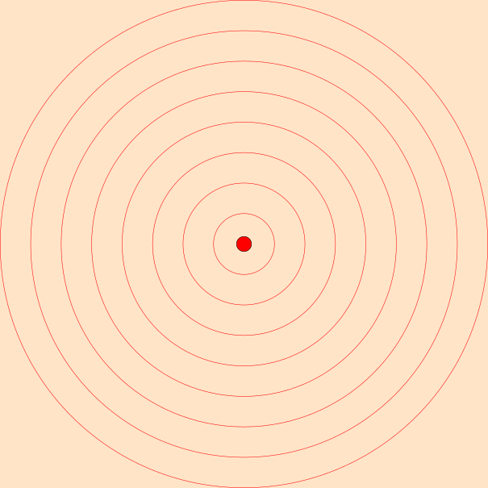
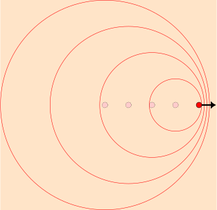
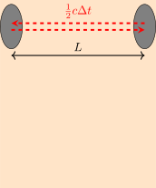
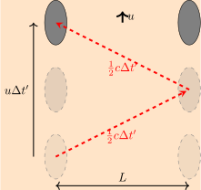
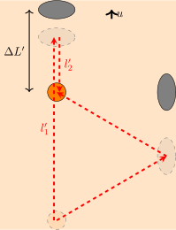
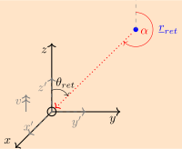
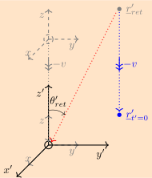

Here we will give an overview of all the main concepts of special relativity, without needing to derive any of the math.
This is to show how special relativity works without needing to comprehend the math at the same time, as the math can distract from understanding the concepts themselves.
Chapter 1. Overview of Concepts
\(\nextSection\)
To make sense of special relativity, we will first look at the classical understanding of the world.
Then, we will see how we must change these classical laws of physics to account for light's constant speed relative to all observers.
Which in turn will lead to many interesting consequences.
The chapter begins with an overview of the core concepts to help us understand why we need special relativity and what it means, leaving the mathematical details and deeper insights for the following chapters.
This chapter's concepts will establish the mathematical framework for later chapters, using physical objects, such as moving trucks on roads, to represent the different perspectives of various observers.
Whereas, in the mathematical chapters, we will use coordinate axes to represent the different perspectives (frames of reference).
Later, you will see the parallels between this conceptual overview and the mathematical chapters.
This chapter will provide an overview of all the required concepts for special relativity, building up the needed knowledge bit by bit, starting with our classical understanding of how perspectives (frames of reference) work and showing how our understanding must change if we are to allow all observers to view light as moving at the same constant speed.
1.1 Classical Addition of Velocities
Imagine a truck, carrying a cannon, is moving at 20 meters per second, and the cannon fires a ball at 100 meters per second relative to the truck.
Classically, we add the truck and the ball's speed, to find the ball moves at 120 meters per second relative to the road.
So, in classical physics, velocities are directly added.
The ball relative to the road would move at the speed of the ball relative to the truck plus the truck's speed relative to the road, as shown in Figure (1.1).
However, this classical understanding is just a very good approximation for objects in our everyday life that we are used to seeing, which are moving much slower than the speed of light (roughly 300 000 000 meters per second), but we will get to this later.
For now, in the following sections, we will explain what an inertial reference frame is and how this works in the classical context so that you can see more clearly the differences between classical and special relativity.
Figure 1.1: Classical addition of velocities. A diagram, showing the speed of a cannonball from two different perspectives, (top) is from the truck's perspective with the cannon at rest and the road moving backwards, the cannonball is shot and moves forward. The second figure (bottom) is from the road's perspective, with the truck moving relative to it. When the cannonball is shot, it looks like it is moving forward faster, with the previous cannonball's speed combined with the speed of the cannon that it was shot from.
1.2 Inertial Reference Frame
A reference frame is a grid of coordinates that we can overlay space with, so that we can state with respect to it where and when an event occurs.
If this grid is stationary or moving at a constant velocity, it is called an inertial reference frame.
In the previous truck example, we could associate a reference frame with the truck, by introducing a grid of coordinates that is stationary relative to the truck and, hence, moving along with it.
This perspective, fixed to the truck, is the truck's frame of reference.
A second grid of coordinates, stationary relative to the road, can also be introduced, representing the road's reference frame.
These grids of coordinates are shown from the road's reference frame in Figure (1.2).
Figure 1.2: Reference frames of a truck and road. A diagram, showing the reference frame of a truck as a grid of coordinates that is moving with the truck relative to the road's reference frame shown as a stationary dashed gray grid of coordinates.
An inertial frame of reference is a reference frame that is not being accelerated.
You can tell if you are being accelerated as you will feel a force.
For example, in an accelerating car, you will feel the seat being accelerated into you, with your body slightly lagging behind in the acceleration.
This principle is used in accelerometers to measure acceleration, as shown in Figure (1.3).
Figure 1.3: Inertial vs non-inertial frames. A diagram, showing a ball attached to the walls of a box by springs, with the ball centered in the box in the inertial frame, with no acceleration (left), and in a non-inertial frame (right) where the box is now accelerating to the right, The ball lags behind as the box accelerates.
We will now look at how movement changes in classical relativity when we change between these inertial frames.
1.3 Classical Inertial Reference Frames
To see how to swap between reference frames in special relativity, we will first have to introduce the classical approach.
To illustrate this, we will look at a setup of two rats on a treadmill with a platform as shown in Figure (1.4), with three rocks hanging above the platform, which are at rest relative to the room.
The two frames of reference will be the treadmill's platform and the room in which the treadmill is in.
Both rats start under the same rock.
One rat runs to a rock positioned in the forward direction of the treadmill.
The other rat runs to an equally distanced rock to the side.
After this, they return to the starting rock.
Here, the platform can be seen as the medium in which the rats move.
Both rats travel at the same constant speed relative to the platform, with the platform either at rest or at a slower speed than the rat's motion to allow them to get to the rocks.
Figure 1.4: Rats on a treadmill. A diagram, showing a 3d view of a treadmill platform, with two rats and three hanging rocks, with arrows representing the rats moving from a starting rock to the other two equally distanced rocks, with the paths perpendicular to each other.
If the platform is at rest, they will return to the starting rock simultaneously.
But if the treadmill is turned on and the platform is moving, the rats will also have to work against the movement of the platform to get to the rocks.
This will lead to different distances the rats have to travel relative to the platform, and as a result, the rats get back to the starting rock at different times.
Figure (1.5) shows what the direction of movement of the rats and rocks look like in each of the reference frames when the platform is moving.
a) Room's reference frame.b) Platform's reference frame.
Figure 1.5: Different reference frames of rats on treadmill. Rats running on a moving platform of a treadmill from two different reference frames, with the paths of the rats represented as arrows.
From the room's perspective, the platform is moving backwards.
The rat that is moving along the direction of the treadmill's motion will have impedance to its movement from the backwards pull of the platform.
But after it turns around, it will have a boost from the platform to return to the starting rock.
Meanwhile, the sideways-moving rat will have to move sideways and balance out the platform's backwards pull to keep its movement in the direction of the hanging rocks.
This gives different lengths of paths depending on the reference frame, as shown in Figure (1.5).
The rats in the platform's reference frame, move with the same speed for all the paths, represented by the arrows.
Whereas, in the room's reference frame, we have a slower constant speed of the sideways-moving rat and two different speeds for the forward and backward paths of the other rat.
This leads to different times for the rats to return to the starting rock.
The rats here use the medium of the treadmill's platform to move, and similarly, it was thought that light needed a medium, called the aether, to travel through space.
If there was this medium, we could test how fast it moved relative to Earth by finding the difference between the return times of light emitted in two perpendicular directions, just as in the treadmill example.
So, next, we will look at the notion of a universal medium referred to as the aether and whether we can have the same frame swapping when it comes to light traveling in two different frames of reference, as we did in this section.
1.4 The Aether
In the theory electromagnetism from the late 1800s, it was believed that light was a wave and, therefore, would need a medium that filled the vacuum of space for it to travel through, called "the luminiferous aether", and that light traveled at a constant speed relative to this aether, like how the rats in the previous section moved at a constant speed relative to the medium of the treadmill's platform.
It was from the theory of electromagnetism and the experiments performed from it, that showed that light should have a constant speed, atleast relative to this aether, but it was yet to be known that light would actually have a constant speed relative to all things.
If the aether existed, the Earth would be moving through it, illustrated in Figure (1.6).
Figure 1.6: The earth and the aether. A diagram showing the proposed aether's and Earth's movement relative to each other.
So, an experimental setup by Michelson and Morley, shown in Figure (1.7), called an interferometer, was devised to measure Earth's movement through the aether [1], by measuring how it affected the return times of light emitted in different directions, as observed in Earth's reference frame.
It did this by splitting a single light beam into two perpendicular paths that are then reflected back to be recombined and sent toward a light detector.
By rotating a platform that the setup is on, the two light paths could be aligned, one parallel and the other perpendicular to the Earth's motion through the presumed aether.
They reasoned that if the speed of light was constant with respect to the proposed aether, just like in the rat experiment from the previous section, the split light beams would recombine at different times.
From the previous section's system of rats on a treadmill, we can see that the treadmill's platform is analogous to the aether, and the rats are analogous to the light.
Both have the room where these experiments are done as the other inertial reference frame.
Figure 1.7: Experiment to detect the aether. A diagram showing the Michelson-Morley experiment, we can take the part of the paths between the beam splitter and two mirrors to be analogous to the case of the paths in the previous section of the rat and treadmill system.
However, when Michelson and Morley performed the experiment, they found no difference in travel time to the detector for both paths, indicating that there was no difference in the speed of light in any direction in Earth's reference frame.
Hence, light's speed is not dependent on the supposed aether.
This null result seriously discredited the aether theories.
It ultimately led to the proposal by Einstein in 1905 that the speed of light (in a vacuum) is a universal constant and is independent of the motion of the observer or source.
To allow for us to have this universal speed of light (in a vacuum), it will require us to change our ideas of how time and positions are perceived by different observers.
1.5 Speed of Light
The experiments within a vaccum, showed light does not just travel at a constant velocity relative to the proposed medium (the aether), and instead travels at a constant velocity regardless of the motion of the reference frame.
The observed speed of light is independent of how fast the source and receiver of that light are moving in the frame, as shown with a moving truck's headlights in Figure (1.8).
Light does move slower in objects such as glass, but this is due to the interactions between the light and the material, impeding the movement of light.
Light itself moves extremely fast compared to any other everyday speeds we are used to (roughly 300 000 000 meters per second; it can travel the world's diameter in the blink of an eye).
This is why we do not notice any delay in the light arrriving from the things we see in everyday life, and we assume everything to be located where we are currently seeing it, though we should remember that there is this delay.
For example, the light we currently see from the sun was emitted eight minutes ago for it to reach us now, and the further an object is located from us, the further back in time we are currently seeing it because of this delay.
When we look at the same truck setup as in Figure (1.1), but now have it in a vacuum, where the cannon firing a cannonball is swapped for headlights emitting light, we will find the same speed of light when measured relative to the truck or the road, but how can this be true?
Figure 1.8: Emitted light in different frames. A diagram, showing light emitted from a truck in two different reference frames, with the emitted light having the same speed in each frame, though with different frequencies and energies due to the Doppler effect, which will be explained later.
For this to be true, we need a new way of thinking about velocity addition.
This is because the velocities of objects must be added in a way that is consistent with the requirement that the speed of light is constant but also gives the approximate classical addition at speeds of objects at much less than the speed of light, like how we observed in the situation with the cannon and truck, shown in Figure (1.1).
Since the speed of the light depends only on the units of time and positions, the only way to correct for this is to have the measured positions and times of objects transform differently when swapping between reference frames than the classical way.
This is what we will talk about next.
For the curious, it was the experiment by Ole Rmer (link) that showed that light traveled at a finite speed rather than being instantaneously emitted and received.
1.6 Position and Time
1.6.1 Time Dilation
Consider a simple clock, as shown in Figure (1.9), made of a light pulse moving back and forth vertically between two mirrors on a moving truck, one on the truck's floor and the other on the roof directly above it.
Each tick of the clock is defined as the time it takes for the light to travel from one mirror to the other and back.
For an observer in the truck, they will see the light go straight up and down between the mirrors, but an observer stationary relative to the road will see not just the light traveling up and down but also with the direction of the truck to allow it to travel back and forth between the mirrors.
Figure 1.9: Light clock on a truck. A diagram, showing a clock consisting of light being reflected between the floor and roof of a truck to keep time, in the truck's frame (top), and in the road's frame with the truck moving (bottom).
Given that the distance traveled by the light in the frame with the truck moving is longer, and from the previous sections we know that the speed of light is the same for both reference frames, to keep the speed of light invariant: the clock itself must tick slower in moving objects.
How much slower the time is passing in the moving truck relative to the road observer can be solved using the ratio of the lengths of the paths in each frame as shown in Figure (1.9), as this is the same ratio as the time between the ticks.
Importantly, this time dilation phenomenon isn't limited to light clocks; it applies universally to all types of clocks.
If you were to play a movie on the truck, it would take a longer time for it to play through from start to finish for an observer watching it from the road's reference frame.
An observer on the road and in the truck experience time at different rates.
This is not just an illusion, it is physical reality.
The closer the truck goes to the speed of light, the more significant the difference in how fast the road frame's time flows relative to the truck frame's time.
This can be seen as an increasingly longer horizontal stretch in the path taken for the light from the perspective of someone standing still on the road, with the time between each tick approaching infinity as the speed of the truck approaches the speed of light.
You may ask about the possibility that the distance between the floor and roof of the truck becoming smaller the faster the truck is moving relative to the road, to allow for the light clock to tick at the same speed, and to get rid of the need for the time dilation, but that would actually lead to contradictions which will be shown later in figure (1.12).
Now, if we instead had two trucks moving at the same speed relative to the road but in opposite directions.
Each truck would see its light moving vertically up and down with the other truck's light moving a longer diagonal path.
Hence, each truck perceives the other truck's clock ticking slower.
An observer in the road's reference frame would see both trucks move at the same speed and, hence, their diagonal paths having the same length, giving the same passage of time between ticks for both trucks.
That is, The slowing of time of moving objects is the same regardless of its relative direction of motion, only the relative speed changes the travelled distance of the ticking light.
This concept is confusing and difficult to visualize, but it will get easier with practice.
For now, though, we will continue building up the concepts of special relativity.
1.6.2 Simultaneity
Imagine a truck in its rest frame, with a light bulb in the middle and mirrors on the front and back walls.
If the light bulb gives off a pulse of light, the light will travel from the center of the truck to reach the mirrors simultaneously and back to reach the light bulb also simultaneously.
An observer on the road watching the truck drive past will see the light bulb simultaneously emit light in both directions and simultaneously return to the bulb again.
However, the light reflects off each wall's mirrors at different times in the road's frame to do this, as shown in Figure (1.10).
This is because the speed of light is the same for both directions, but the truck is moving, meaning the back of the truck is moving towards where the bulb was when the light pulse was emitted, making the distance traveled shorter.
The light travels a longer distance to the front wall due to the wall moving away from where it was emitted.
Because of this, the observer on the road will see the light hit the mirrors at different times.
Figure 1.10: Simultaneity of events in different frames. A diagram showing how two events of light reaching the two walls of the truck are simultaneous in one frame but happening at different times in another, due to truck's movement in the second frame and the speed of light remaining the same.
Consequently, times of events, such as when the light reaches either mirror, are different for observers in different reference frames.
There is no one true order of events.
For example, an observer in a faster-moving vehicle moving in the opposite direction would see the light reach the front wall first.
However, for all observers, the light will return to the central light bulb simultaneously.
If two events happen in the same position simultaneously, then this happens simultaneously in all frames of reference.
This means the light returns to the center of the light bulb simultaneously in each frame.
A note here is that we are talking about when the events actually happen in each frame and not when the light from these events reaches the observer, which is later due to the time it takes the light from an event to travel to the observer for them to see it.
Also, I have left out any mention of length contraction of the truck, which will be introduced in the next section, and why it needs to be equal in both directions from the lightbulb for the light to simultaneously return to the light bulb.
1.6.3 Length Contraction
Consider a truck, in its rest frame carrying a square container.
If a light bulb at the square container's center emits light in the two horizontal directions and the two vertical directions it will bounce off the mirrored sides of the truck and return to the center simultaneously.
We require that in the moving frame, they also all return to the center simultaneously, as multiple events that happen at a single point simultaneously in one frame, must happen simultaneously in all other frames.
The light reflects off the walls at different locations, so the order of reflections in time will depend upon the relative observer, as described in the previous section.
The time between the light being emitted and absorbed from the light bulb is the dilated time, that was described in section (1.6.1).
To achieve this simultaneity in the return of the light to the bulb, the total length of the path of light in each of the four directions must be the same, as lights speed is the same in all directions.
We can work out the length of the up and downward path from the time dilation section (1.6.1), and this is the length the path needs to be in the horizontal directions as well.
The paths can only have this length if the truck is contracted in the direction of its motion, to allow for the light to be relected from the walls at the required positions for these path lengths.
The amount of contraction is same in both directions.
The exact amount of the contraction can be worked geometrically, and it turns out that the ratio of the increase in the amount of time that passes before the light is reabsorbed is inversely proportional to the amount the truck is contracted in the direction of its movement.
That is, if in a moving frame the time is dilated so that the light clock takes twice as long between ticks, then the length of the moving lorry becomes half of its length when at rest.
This is shown in the following figure.
Figure 1.11: Length contraction of moving truck. A diagram, showing a truck with a square container in its rest frame (top), emitting light from a central bulb in the four directions, with all light being reflected by the mirrored sides back to the center, as shown in red. In the second frame with the truck now moving (bottom), we see the truck's length contracted to allow all paths to be the same length.
We now know that moving objects must shrink in the direction they move to allow for a consistent speed of light in each frame.
But this srinking is not noticeable when objects move much slower than light speed.
If you are unsatisfied with this, the next section will reason the need for length contraction in another way using three accelerating cars.
But first we will look at the reason we did not consider any change in sizes of moving objects in the directions perpendicular to an object's movement.
If we look at the possibility that a moving object contracts in the direction perpendicular to the direction of its movement, we find out that this leads to contradictions, as shown in figure (1.12).
As it allows for the possibility that a moving objects size in the perpendicular direction is smaller than a container when being observed in a containers rest frame but is bigger than its container in the object's frame.
Which is impossible as this would break the container just becuase you decided to viewed the object from a different reference frame.
Figure 1.12: Paradox of height and width contraction. A diagram showing why there must not be a contraction in the perpendicular direction to the frame's relative motion. The top Figure shows a ball and cannon at rest. The bottom figures show the cannon ball being fired in the frame of the cannon (left), where the moving ball has a contracted width, and (right) in the frame of the ball, where the canon is now moving and has a contract width, with the ball at rest being the same size. Both frames would contradict each other if there was a change in the width of moving objects, as the walls of the cannon and the surface of the ball would overlap in one frame and have a gap between them in the other. So, we require no size change perpendicular to the object's movement.
In the previous section we had in the frame with the truck moving, that the emitted light reaches the top and bottom of the square container at the same time.
But the times it reachs the left and right walls are non-simulataneous, and it is this difference in timings that allows the truck to contract in the direction of movement without the contradictions that are present when we look at the possibility of contraction in the perpendicular direction to the movement.
Another Illustration of Length Contraction
Figure 1.13: Length contraction between three accelerating cars. A diagram, illustrating an experiment with three cars initially at rest and equally spaced on a road. The middle car emits light that reaches the front and back cars simultaneously, triggering all cars to accelerate for a predetermined time. Now another light is emitted from the middle car after the acceleration has finished, the road observer sees this second light pulse reach the back car first, as it is moving towards where the light had been emitted, this causes it to begin accelerating before the front car. This results in the cars being closer together after acceleration, demonstrating Lorentz length contraction. However, to the car observer, the distance between the cars remains unchanged from the initial distances.
Suppose we have three equally distanced cars at rest on the road, as shown in Figure (1.13).
If the middle car sends out a pulse of light, it will reach the front and back car at the same time for the road observer and the observers in the car. When it reaches them both, all the cars accelerate for a predetermined fixed amount of time to the same speed.
Following this acceleration period, the cars have maintained equal spacing relative to both the car observers and the observer on the road.
As for all observers, the light reached the front and back cars at the same time.
Now, suppose we do this a second time, with the middle car releasing another pulse.
In this case, we have in the frame of the observers in the cars: again, with the front and back drivers receiving the pulses simultaneously, meaning that they will start accelerating simultaneously.
After the acceleration has finished, the distances between the cars will be the same for the car observers.
But for the road observer, they see the back car receive the signal first, as that car is moving towards the point where the light pulse was emitted, and the front car is moving away from it.
This would mean the back car would start accelerating first to get to the final constant velocity and get closer to the front car before the front car begins to accelerate to that same final speed that the back car had already reached.
This results in the cars being closer together after the acceleration.
The observers in the car and the road observer disagree with what the distances between the cars are.
This contraction of length between cars, in the road's frame in which the cars are moving, is called Lorentz length contraction, which means that objects that are moving faster become shorter, and the distances between the objects also become shorter.
1.7 Doppler Effect
If we have a light source at rest, emitting circular pulses of light with equal times between each pulse, we will have concentric circular pulses in this frame.
But, if we move to a frame where the source is now moving to the right, each circular pulse is emitted from a different position.
Due to the source moving, each pulse will be emitted closer to the right-hand side of the previous pulses, creating a bunching up of the pulses (increase in frequency) in the direction of movement and a spreading out (decrease in frequency) of the pulses in the opposite direction.
This also happens in the classical version of the Doppler effect.
For example, you will notice that an ambulance or police car sounds different when driving towards or away from you due to the bunching up and spreading out of the sound waves in the direction and opposite direction of the moving vehicle.
However, in special relativity, we also must take the time dilation of the pulses into account, as there will be a longer time between each subsequential pulse.
This is due to objects moving relative to an observer and therefore having their perceived time moving more slowly.
This is called the second order Doppler effect most notably seen in optical clocks.
This has a decreasing effect on the frequency in all directions.
However, directly in the direction of movement of the source, this is outweighed by the frequency increase from the previous bunching-up effect.
Since the energy of the light is proportional to the frequency, it is also increased in the direction of motion of the source due to the Doppler effects and decreased in the opposite direction.

a) still source

b) moving source
Figure 1.14: Spherical waves from a moving source. A diagram showing (left) a central source at rest emitting several circular pulses of light with equal time between each pulse, (right) the same source in a frame where it is now moving and emitting circular pulses of light, but each subsequential pulse is emitted from a different position as the source is moving, marked by a faded dot.
One thing not mentioned yet in this picture so far is how the light is also affected by what is called the aberration, which is the change in the angular distribution of the light at each part of the spherical pulses, which will be explained in the next section.
1.8 Aberration
Here, we will talk about what the Doppler effect in the previous section has yet to show, which is the effect on the angular distribution of the light in each part of the spherical pulses.
We will show that there is a higher concentration of light in the direction of the source's movement, as shown in Figure (1.15).
With the help of the length contraction section (1.6.3), Consider a truck with a spherical mirrored container, with a central bulb emitting light in all directions.
In the rest frame all light reaches the spherical wall simultaneously and returns to the center bulb simultaneously as well.
Then in the moving frame, we have the spherical container length contracted and the light moving at the same speed but reflecting off the same parts of the walls but at different times, and then returning to the center bulb simultaneously.
For this to be true, the directions of the light must be aberrated (have their direction of propagation changed) in the way shown in the diagram to allow for this simultaneous return to the bulb.
a) Pulse emittedb) Pulse absorbed
Figure 1.15: Aberration of light on a truck. Two diagrams of a truck with a spherical container in two different frames, a light pulse is emitted from the center of the container (left) and reflected back by the mirrored wall to be absorbed in the center again (right), the truck in its rest frame (top of both figures) shows an evenly distributed outward light pulse, but in the frame, with the moving truck (bottom of both figures) the emitted light is now more concentrated in the direction of the truck's movement, which is required to allow the light to be reflected by the same part of the container and returned to the center of the truck simultaneously.
From the diagrams, you can see how light's direction of propagation is changed when emitted or absorbed by a moving source relative to its rest frame, this is called relativistic aberration. The faster the source is moving, the more the direction of each part of the light pulse is changed/aberrated.
If the speed of a source was to approach the speed of light, all emitted light's propagation direction would approach the direction of movement of the source.
If the source could theoretically reach the speed of light, all light would be emitted in the direction of the source but also move at the same speed.
That is, the source would move with the emitted light, and it would not leave the vicinity of the source.
The rate at which it emits the light would also tend to zero.
If a photon theoretically had mass and its influence of the gravitational force moved at the speed of light, then we would not be able to feel any gravitational effects from this theoretical photon with mass outside its vicinity.
This is due to all its gravitational field being propagated in the direction of its movement and at the same speed as the photon.
Now let us look at how the aberration effect is needed when astronomers are mapping the stars in the sky.
1.9 Aberration When Observing the Stars
Earth's view of the universe is distorted differently by the aberration effect, depending on which direction the earth is currently moving in its orbit around the sun.
This is something that needs to be taken into account when making observations using telescopes, so that we get the locations of star that is in agreement with measurments from times the earth is moving in a different direction.
To get the locations of the stars that are consistent throughout the year, astronomers can calculate the recieved light's directions in the rest frame of the sun instead of the earth, as the sun's movement is more consistent.
This is shown in the following diagram.
a) sun's frameb) earth's frame
Figure 1.16: Aberration of observed star light. A diagram showing light from distant stars being observed on earth, with the light being recieved in the sun's frame, with the earth moving (left), and the other diagram (right) showing the same light being recieved, but now in the earth's rest frame, with the light's direction now more in the direction opposite to earth's movement compared to the sun's frame. The arrows show the direction of the light from the stars.
The sun is also moving relative to the milkyway galaxy it is orbiting, so you could go a step further and always calculate the light's direction with respect to the center of the galaxy.
Now We will look at the combination of the Doppler effect and aberration in the next section.
1.10 Relativistic Beaming
When the Doppler effect and relativistic aberration are taken together, it is known as relativistic beaming.
If we have a source in its rest frame emitting a spherical pulse of light with evenly distributed angles.
Then in a second frame with the source now moving, the Doppler effect has the spherical pulse's wavelength bunched up in the direction of movement (giving a change in the color of the light), with the aberrational effect also giving the angular spread of the light at a higher concentration in the direction of the movement of the source, as shown in figures (1.17).
a) rest frameb) Moving frame
Figure 1.17: Relativistic beaming of emitted light. Outward light pulse from source in a rest and moving frame.
a) rest frameb) Moving frame
Figure 1.18: Relativistic beaming received light. Inward light pulse from source in its rest and moving frame.
For astrophysics, we need to consider this beaming when looking at distant stars that are moving relative to us so that we can accurately calculate their brightness and the spectrum of light that they are emitting, along with some other things.
We also need to consider that the position we are currently seeing the stars in is their past position due to the delay in light traveling to us on Earth, which is referred to as the retarded position.
We will talk about this next.
1.11 A Source's Retarded Field of Light
We can make a vector field plot, which is a plot of arrows that shows the position and direction of light in space.
So if we have a source in its rest frame that continually emits pulses of light with a constant time between each pulse, we get what is shown in Figure (1.19.a).
If we wanted to know what this light vector field looked like in a frame with the source moving, we would need to take into account that the position the source emitted each pulse from is its past position (retarded position).
We also have the dilated time between pulses in this moving frame, so using these and the beaming effect from the previous section we get the light's vector field as shown in Figure (1.19.b).
From this, we can work out the distribution and, hence, the concentration of the light for any moving source relative to when it is at rest.
If you look closely at the diagrams, you will see the aberrated rings of all the pulses, all with different points from which they were emitted, with them being more compact in the direction of the source's movement.
a) Source's Rest Frameb) Primed framec) Primed frame
Figure 1.19: Vector field of light pulses from a source. A diagram, showing multiple spherically symmetrical pulses of light from a source at rest, fig (a), and in a corresponding inertial frame where the source is now moving, fig (b), the colors show the Doppler effect on the light, and the gray dots show the past positions of source when it had emitted each pulse, there is also a diagram showing the circles of each pulse, fig (c), This shows the spherical waves being closer together in the direction of movement.
In particle physics, the photon is the particle that composes light.
It is the carrier of the electromagnetic force between charges.
So how the light's propagation transforms when swapping between frames is necessary to understand electromagnetism, and how the magnetic field comes about for moving sources.
The diagram of the moving source shows you where the source and light currently are.
But, if you were an observer at a particular position in the vector field, you would see the source at its retarded position and not where it currently is, as the light has to travel to you before you see it.
This will be used in the next section to show that you can perceive things moving faster than light, even if they are not.
1.12 Velocity
We looked at how velocities at the speed of light change between different frames of reference, that is, how their directions of propagation are rotated (aberrated).
However, for objects moving at velocities slower than that of light, its speed will change in addition to the direction being transformed when swapping between frames.
This is due to us needing the relativistic transform to tend towards the classical transform as we look at smaller and smaller speeds of objects.
To understand the general velocity transformation, some mathematical detail is needed, so we will need to brush over this for now, and instead look at how the apparent velocities of objects can be more than that of light, even if they are moving slower.
1.13 Apparent vs Actual Velocity
Imagine that a ball one light year away (the distance it takes light to travel in a year) is fired directly towards you, as shown in Figure (1.20).
It will take one year for the first light from when the ball starts moving to reach you.
If the ball moves at three-quarters of the speed of light, it will hit you in four-thirds of a year (a year and four months) after it is fired.
The last light from the ball will reach you just as the ball hits you.
As you perceive it, the time between the first and last light from the moving ball is four months.
During those four months, you will see the ball start at its initial position and travel a distance of one light-year.
So, to you, the ball appears to have been moving three times faster than light.
This is just how it appears to the observer due to the delay in the light signal, giving the latency in how the system is observed.
Figure 1.20: Apparent faster than light movement. A diagram demonstrating the Apparent speed of a ball vs its actual speed ... the red arrow represents the light being emitted from when the ball starts moving from its position one light year away...
This shows how important it is to consider the delay in the light from objects when observing relativistic systems.
This view is called the delayed/retarded view, meaning what we see now are objects in their past positions, and the further things are from us, the further into the past we are currently seeing them.
1.14 Summary
A key early concept was that light traveled through a medium called the luminiferous aether.
The Michelson-Morley experiment attempted to measure Earth's motion relative to this aether.
Surprisingly, no difference was found in the speed of light regardless of direction through this proposed aether.
This conflicted with the intuitive addition of velocities, discredited the aether theory, and led Einstein to propose light's constant speed in all inertial frames of reference as a fundamental principle.
Special relativity emerged from this insight that light's speed in a vacuum is constant for all observers, regardless of the light source's speed relative to each observer.
This required rethinking the concepts of time intervals and distances between points to accommodate light's fixed speed.
This led to the requirement that a clock moving relative to an observer ticks slower from the observer's perspective while also being contracted in the direction of its motion.
This was shown in Figure (1.9) and Figure (1.11).
The faster an object moves relative to an observer, the more its length contracts and its time dilates to the observer.
It also led to the simultaneity of events not being absolute.
For example, light emitted from the middle of a moving truck reaches the front and back walls simultaneously for an observer at rest in the truck.
But an observer standing still on the road sees the light hit both walls at different times, as shown in Figure (1.10).
There is no universal "now" at a distance-observers relate times of events differently.
It is only events that happen simultaneously at the same location that happen simultaneously in all frames of reference.
Classical physics is verified by our day-to-day experience, though this does not reflect the full reality, as relativistic effects only become readily noticeable at speeds close to that of light.
With the speed of light being 300 million meters per second, astronomically faster than what occurs in our daily experience.
When it comes to velocities, they combine differently than in classical physics.
However, we must ensure that the transforms reduce to the intuitive addition of velocities of classical physics at low speeds while accommodating light's constant rate in all frames of reference.
This leads to initially bizarre outcomes such as apparent faster-than-light motion emerging from how relativistic optical effects play out across distances, which is due to the delay in light signals from objects at a distance.
Nevertheless, special relativity gives a truer, more accurate picture of reality.
Due to space-time effects on wave propagation, we also have seen that the emitted light's frequencies shift (Doppler effect) for a moving source, and that light is concentrated in the direction of the source's motion (aberrational effect).
Together, both intensely focus light in the direction of rapidly moving objects, giving relativistic beaming.
These effects will all be explained more fully with math in the coming chapters, along with other effects that require the math to fully understand, as well as new energy, mass, and momentum conservation laws.
We will derive everything step by step, starting with the transformation of positions and times between reference frames.
Here we will go through the mathematical details of the essential concepts of special relativity, all of which will be derived step by step.
The chapters in this part teach the basis of special relativity.
When it is taught in university, it will typically make up only a part of one module in the first year, and be taught over 2-3 weeks.
It is the topics in this part that will be taught during this time.
Chapter 2. Position, Time and Velocity
\(\nextSection\)
Now that we have learned about the concepts of special relativity, we can use them and let the mathematics begin.
Starting with classical relativity, which will give us an understanding of how to transform coordinates between reference frames.
This will give us something to compare special relativity to later, and help with our intuition.
What we learn here will be directly used in all of the following chapters, to derive more of the foundational concepts of the theory.
As everything else is all built upon this chapter, which is about how the positions and times are transformed between two inertial frames to allow the speed of light to stay constant.
In this chapter, we will start with how swapping between two inertial frames works classically.
Then using two postulates (factual statements we assume to be true) for the basis of reasoning for special relativity, we will find out how to swap between frames in special relativity, by following the train of thought that we did in the previous conceptual chapter.
By first deriving the time dilation, and length contraction equations in order to then find the full transform of the space and time coordinates between two inertial frames.
We will come across a very useful quantity which we will denote with a \({\gamma }\), this quantity will be used throughout this book to simplify equations.
After this, we will look at the transform for infinitesimal changes in distances and use this to derive how velocities and accelerations change when swapping between two inertial frames.
By the end of this chapter, you will understand the coordinate transforms conceptually and mathematically when swapping between two frames, and how to derive the velocity and acceleration transforms.
2.1 Classical Relativity
Classical (Galilean) relativity was the earlier theory of how to transform coordinates in different inertial frames.
It was based on two assumptions, which are that in each frame, you would observe the following:
The distance between objects is the same.
Time flows at the same rate, giving the same time for an event in each frame.
Before special relativity, it was assumed that distances between two points were the same for all observers.
That is, the first observer would see a stick and measure it to be the same length as another observer who is moving relative to the first.
The other assumption is that the flow of time is the same for everyone.
That is, clocks move at the same rate for each observer and if, say, a particle was to emit light at a particular time, this light would be emitted at the same time for all observers.
For classical relativity, if we have the positions and times of a particle's motion relative to one observer in their frame, and we want to find the motion of the particle relative to a second observer who is moving at constant velocity relative to the first.
We need to know how to transform these into this second observer's frame.
That is, if we have how one observer would describe the coordinates of a particle over time relative to them and we want to now know the coordinates of the particle with respect to the other observer, we need to know how the transformation of coordinates works.
So let us see how the mathematics works for the classical coordinate system transform between two inertial observers frames, by looking at the coordinates of an event in an initial reference frame with a second inertial frame's coordinate axis moving relative to the initial frame's, illustrated in Figure (2.1):
Figure 2.1: An event in initial frame with a primed frame's axis moving relative to its axis. This shows an initial frame with its associated \(x ,y ,z \)-coordinate system at rest in this frame, with origin \({o }\). There is also an \(x' ,y' ,z' \)-coordinate system with origin \({o' }\) associated with the "primed" frame, at position \({\vec{oo'} }=(0,0,{v }{t })\) in the initial frame, where \({v }\) is the speed of the primed frame in the z-direction relative to the initial frame, and \({t }\) is the time in the initial frames. An event \({\vec{e} }\) in this initial frame is described by a set of spatial and time coordinates \({\underline{r} } = ({x },{y },{z })\) and \({t }\). We choose the time to be zero in both frames when both axes overlapped, so that \({t }\) is also the time from when they overlapped. We also show \({\vec{o'e} }\) which represents the vector from the primed axis origin to the event in the initial frame.
As shown in the diagram, we are in the initial frame with origin \({o }\) defined by coordinates \((0,0,0)\) and the primed frame is moving in the z-direction at velocity \({v }\) such that the position of the primed origin relative to the initial frame's axis is
To swap into the primed frame's coordinates, we need to recall from the previous assumptions that distances and times are conserved, and therefore the length and directions of all the vectors between \({o }\), \({o' }\) and \({e }\) are the same in each frame, and time flows at the same rate (\(t' = t \)), from this knowledge and Figure (2.1) we have the event's coordinates described in the primed frame by its coordinate axis as
These are the equations that define classical relativity, we can compare this to the equations of the coordinate transforms in special relativity later. They define the event's position relative to whichever frame that we are in's axis. The special relativistic equations later will look similar to these, but with an extra factor in the z-component and with the time will no longer be consistent in both frames.
We can also write the initial frame's event coordinates in terms of the primed coordinates, by rearranging the transformation equations giving the inverse transform as
So the inverse transformation, going from primed frame to original is just a matter of swapping all primed and initial coordinates and changing the sign on the frame velocity
This can be seen at time \({t } = 0\) when we have the frame's origins overlapping and there is a symmetry from here, as we have the freedom to choose either frame to be the original, as no frame is particularly special and depending on which one you pick the relative velocity is either \({v }\) or-\({v }\). We will have the same rules in special relativity later on when we want to get the inverse transform.
You might have noticed that the direction of the second frame is in the upward z-direction instead of being to the right in the case of the truck diagrams from the previous chapter, this is to help us when we use spherical polar coordinates later and to help see the symmetries. But that is a couple of chapters away, for now we will look at the assumptions of special relativity and their consequences, which we will then apply to the same notion of an event that we have in the Figure (2.1).
2.2 Postulates of Special Relativity
For classical relativity, we started with two assumptions. It turns out that these assumptions need to be thrown away, as they contradict the experimental evidence that the speed of light is constant for every observer and frame. We replace them with two new assumptions, called the postulates of special relativity:
A foundational statement that is assumed to be true without proof.
The speed of light in a vacuum is the same in all inertial/non-accelerating frames of reference.
The laws of physics and outcome of experiments are the same in all inertial frames of reference. If an observer in an inertial reference frame carries out an experiment, they would find the same result if they had carried it out within a different inertial frame instead.
The first postulate here will be the most important to us in deriving the transform equations of special relativity and will be used to show how time is dilated/slowed down for moving objects. The second postulate has a consequence that if events happen simultaneously at an overlapping position in one frame, then they will also happen simultaneously in an overlapping position in any other inertial frame.
We will now use these assumptions with the concept of a light clock to show the effect of length contraction.
2.3 Time Dilation
Time passes more slowly for things moving relative to you, this is called time dilation.
To explain why it happens we will use the simple concept of a light clock.
It consists of light bouncing between two mirrors.
It keeps time by measuring when light returns to the first mirror, counting it as one tick of its clock, as shown in Figure (2.2).

a) rest frame

b) Moving frame
Figure 2.2: Light clock showing time dilation. The light clock keeps time by counting each time the light makes a return journey when bouncing between two mirrors with length \({L }=\frac{1}{2}{c }{\Delta \tau }\) between them, were \({\Delta \tau }\) is the time for the return journey in the rest frame, the diagram shows the mirror's rest frame (left) and a frame with them moving at speed \({u }=-{v }\) (right). In this second frame, there is a distance \({u }{\Delta t' }\) between where the light was initially reflected by the left mirror and where it returned to it. For this, the light had to travel a total diagonal distance of \({c }{\Delta t' }\) to return, were \({\Delta \tau }\) is the time for the return journey in the primed frame.
The light in the clock, takes a time \({\Delta \tau }\) in the clock's rest frame to make the return journey.
We can see from Figure (2.2.a) that in the rest frame, the distance the light travels to the mirror and back in this time is
where \({\Delta t' }\) is the time it took light to return in the moving frame and \({u }\) is the speed of the light clock, which is in the opposite direction of the movement of the primed frame relative to the rest frame, that is \({u } =-{v }\).
The distance light travels in this time is
\begin{equation}
{c }{\Delta t' }
\end{equation}
This is the hypotenuse of a right-angled triangle formed by \({u }{\Delta t' }=-{v }{\Delta t' }\) and \(2{L }\), so we have the square of the hypotenuse equal to the square of the other two lengths:
\begin{equation}
c ^2 \Delta t' ^2 = v ^2 \Delta t' ^2 + c ^2 \Delta \tau ^2
\end{equation}
rearranging to find the time it took in the primed frame relative to the rest frame, we find
\begin{equation}
\gamma = \frac{1}{\sqrt{1-\frac{ v ^2}{ c ^2} } }.
\end{equation}
This factor, \({\gamma }\), is used throughout special relativity to simplify equations.
We can see from the diagram and the equations, that the time for the return journey in the frame with the clock moving is longer relative to its rest frame,
We take this outcome as the time taken between two events at the same position in the moving frame takes longer than in the rest frame of the clock, due to the longer distance light must travel at the same speed.
Hence systems that are moving seem to have there time flowing slower.
One example of this, is that unstable particles that are moving faster have longer livespans before they decay.
2.4 Length Contraction
An object's size gets smaller in the direction of movement compared to when it is at rest, this is called length contraction.
To explain why it happens we will add a second perpendicular light path to previous section's experimental setup.
So there is now light moving perpendicular as well as parallel the primed frame's movement, as shown in Figure (2.3)
a) Rest frame

b) Moving frame
Figure 2.3: Light paths showing the need for length contraction. A central orange bulb emits light in two directions, with all light being reflected by the mirrors back to reach the central bulb simultaneously. This is shown at rest, fig (a), and in another inertial frame with the system now moving at speed \({u }\), fig (b), with its length now having to be contracted in the direction of movement to allow for the simultaneous return of light to the bulb. The length between the bulb and front mirror is shown as \({\Delta Z }\) and \({\Delta Z' }\) in each frame. The paths the light took to the front mirror \({z_1 }\) and back \({z_2 }\) are shown in the rest frame with the corresponding paths \({z'_1 }\) and \({z'_2 }\) in the moving frame.
If we have a system as described in Figure (2.3).
Then since the light returns simultaneously in the rest frame, we need the light to also return simultaneously in the second frame.
Multiple events that happen at a single point simultaneously in one frame, must happen simultaneously at a single point in all other frames.
This is to allow for the second postulate to hold true.
The time between the light being emitted and absorbed will be the dilated time that we worked out in the previous section.
This can be seen as the sideways light path in this and the light clock's setup from previous section is the same path.
In the moving frame, to achieve this simultaneity in the return of the light to the bulb, the length of the full path of light from the central bulb to the front mirror and back (\(2 {\Delta Z' } = {z'_1 } + {z'_2 }\)) must be the same as the perpendicular path, due to the speed of light being the same for both paths.
We can work out the length of the sideways paths from the time dilation section, \({c }{\Delta t' }\), and this is the length the total path needs to be in the forward directions as well.
We will find that the paths can only have this length, if the distance between the bulb and the front mirror is contracted in the direction of movement.
Note that there can not be a contraction in the perpendicular direction to the movement due to the paradox explained in Figure (1.12).
In the moving frame, the pulse sent forward has a path length equal to the speed of light times the time taken for the path.
Which is also equal to the primed frame's distance between the bulb and mirror plus the distance the mirror has moved away from the point it was emitted in this time, that is
where \({u }\) is the speed that the front mirror is moving away from the point it was emitted, \({\Delta t'_1 }\) is the time taken to get to the mirror, and \({\Delta Z' }\) is the distance between the bulb and the mirror in front in the primed frame.
After reaching the mirror, the light then must travel back to the bulb a distance
Where \({\Delta t'_2 }\) is the time taken to return to the bulb from the front mirror, with the source moving towards the reflected light.
Both of these give the two times as
\begin{equation}
{\Delta t'_1 } = \frac{\Delta Z' }{ c - u }
\end{equation}
and
\begin{equation}
{\Delta t'_2 } = \frac{ \Delta Z' }{ c + u }.
\end{equation}
Adding both these times together gives the total dilated time of return as
\begin{equation}
\begin{aligned} {\Delta t' } & \color{gray} = {\Delta Z' }(\frac{1}{ c + u } + \frac{1}{ c - u }) \\
& \color{gray} = \frac{\Delta Z' }{c }\frac{2}{1- u ^2/c ^2} \\
& = 2 \gamma ^2 \frac{\Delta Z' }{c } \end{aligned}
\end{equation}
where we used \({u }=-{v }\) and then the \({\gamma }\) factor to simplfy equation.
Now from this and using the time dilation equation, we have
\begin{equation}
c {\Delta t' } = {c }{\gamma } {\Delta t } = 2{\gamma } {\Delta Z } = 2{\gamma }^2 {\Delta Z' }
\end{equation}
Finally, this leads to the length from the bulb to the front mirror in the primed frame to be
This means that for a system moving relative to an observer, the distances for the system in the direction of movement are contracted compared to the rest frame of the object, that is
\begin{equation}
{\Delta Z' } \leq {\Delta Z }.
\end{equation}
Objects and the distance between them are therefore shorter in a frame with them moving compared to in the rest frame of the objects.
With this knowledge and the last section, we can now derive the coordinate transform equations.
2.5 Position and Time Transformation
In the last two sections we have looked at the dilation between two different times at the same location and the contraction between two different positions at the same time, when we swap between frames.
Now we will use both these concepts to help us see how the combination of the time and the position coordinate, known as an event, transforms when we swap frames.
For the derivation of the coordinate transformation of an event between two inertial frames, we will be starting with the same diagram as we had in the classical relativity in Section (2.1) and apply what we have learned from the time dilation and length contraction sections so that we can be consistent with the postulates of special relativity.
This will allow us to derive the coordinate transformation equations, known as the Lorentz transformation.
Figure 2.4: An event in initial frame with a primed frame's axis moving relative to it. This shows an initial frame with its associated \(x ,y ,z \)-coordinate system at rest in this frame, with origin \({o }\). There is also an \(x' ,y' ,z' \)-coordinate system with origin \({o' }\) associated with the "primed" frame, at position \({\vec{oo'} }=(0,0,{v }{t })\) in the initial frame, where \({v }\) is the speed of the primed frame in the z-direction relative to the initial frame, and \({t }\) is the time in the initial frames. An event \({\vec{e} }\) in this initial frame is described by a set of spatial and time coordinates \({\underline{r} } = ({x },{y },{z })\) and \({t }\). We choose the time to be zero in both frames when both axes overlapped, so that \({t }\) is also the time from when they overlapped. We also show \({\vec{o'e} }\) which represents the vector from the primed origin to the event in the initial frame.
As shown in the diagram, we are in the initial frame with origin \({o }\) defined by coordinates \((0,0,0)\) and the primed frame is moving in the z-direction at velocity \({v }\) such that the position of the primed origin in the initial frame is
These are just the position coordinates of the event in the primed frame.
The primed frame's axis and coordinates are moving relative to the initial frame, so from the previous length contraction section we would have the displacement between the primed axis origin and the event in the initial frame \(\vec{o'e}\), length contracted, in the \(z \)-direction, compared to the primed position coordinates in the primed frame \({\underline{r}' }\), that is
The \(x \) and \(y \)-components are unaffected, with the paradox of it they were effected, explained in Figure (1.12).
Rearranging for the \(z \)-component, we have
There is a symmetry between the frames because if we were originally in the primed frame we would have the initial frame moving instead at -\({v }\) in the z-direction relative to the primed frame, and we could follow the above steps starting with this and the primed coordinate instead, and find the inverse transformation is the same apart from it replaces each frame's coordinates with the other and has the negative of the previous frame velocity instead.
That is
with \(1/{\gamma }^2 = 1-{v }^2/{c }^2\) leading to the primed frames time for the event given in initial frames coordinates as
\begin{equation}
t' = \gamma \left( t -\dfrac{v z }{c ^2} \right)
\end{equation}
again if we want the inverse transform from primed to initial frame we can swap the primed and initial frame coordinates and put an extra minus in front of the frame velocity.
We now have the full description of the transformation of the position and time of an event as
\begin{equation}
\bbox[#fff9cf, 10px, border-radius: 10px; border: 3px solid black]{ \begin{aligned} & {x' } = x \\
& {y' } = y \\
& {z' } = \gamma ({z }-{v }{t }) \\
\text{with the time since the}&\text{ overlap of the coordinate axes:} \\
& t' = \gamma \bigg(t -\frac{ {v }{z } }{ c ^2}\bigg) \\
\text{with }\quad& \gamma = \dfrac{1}{\sqrt{1-\frac{ {v }^2}{ c ^2} } } \end{aligned} }
\end{equation}
These are the equations that define special relativity, They allow us to find an event's position relative to whichever frame that we want to swap into's axis.
In the time transform equation the \(\frac{ {v }{z } }{ c ^2}\) term is the cause of the simultaneity of events at two different positions in one inertial frame no longer being simultaneous in another inertial frame, and the \({\gamma }\) factor, is the term that causes the overall change in how fast time flows at a point relative to the initial frame.
In the spatial coordinate transform equations the \({v }{t }\) factor is due to both axes' origins moving away from each other and the \({\gamma }\) factor is the cause of the change of lengths in the direction of the frame's movement.
We can see how points representing the coordinates in an initial frame look like in a primed frame of reference, by looking at Figure (2.5).
a) Initial frameb) primed framec) primed frame (\(t' =0\))
Figure 2.5: Transformation of coordinates into a primed frame. A diagram, showing a grid of points, representing the initial frame's coordinates, at time \({t } = 0\) that are at rest in their frame (left), giving the direct transformation, using the transform equations, into the moving primed frame (middle) where the points are now moving in the negative z-direction with \({z' } = \gamma {z }\), the colors and labels show the desynchronization of the primed times \(t' = -\frac{ v }{ c ^2} \gamma {z }\), the next figure (right) shows where these points would be when they are synchronized with the primed origin's time \(t' = 0\), which can be worked out to be (\({z' } = \frac{ {z } }{ \gamma }\)).
This diagram shows stationary points representing coordinates in the initial frame.
In the primed frame, these points are transformed to the position \({z' } = \gamma {z }\) and are now moving at speed \(-{v }\), they are transformed using the transformation equations to points that are more spread out in the primed frame, but the times they are located at each of these points are different, they have desynchronized times.
Therefore, to find these points, which represent the coordinates in the initial frame, now in the primed frame at the synchronized time of \(t' = 0\), we must propagate the points to that time, which ends up being \({z' } = \frac{ {z } }{ \gamma }\), as shown in figure (2.5.c).
This figure is to give you a little bit more intuition on how the coordinates and swapping between frames work.
We will later see a more natural interpretation of the coordinate transforms when we introduce the notion of retarded time in Chapter (4), which will give us another reason for why the time transformation is the way it is.
2.5.1 Transforms with Small Primed Frame Velocity
If we have the primed frame velocity much smaller than the speed of light, (\(v \ll c \)), then we have \({v }/{c }\approx 0\) and therefore \(\gamma \approx 1\).
Hence, we get back the previous classical transform equations
Which is the expected result, as it agrees with the everyday observations we are used to seeing at these speeds.
That is, no noticeable difference in times on clocks or lengths of moving objects.
We can see when the \(\gamma \)-factor's influence starts to become significant from Figure (2.6).
Figure 2.6: \(\boldsymbol{\gamma }\)-factor. A diagram, showing the magnitude of \(\gamma \) with increasing ratio of primed frame's speed to the speed of light, with \({\gamma }\) tending to infinity as \({v }/{c }\rightarrow 1\).
As can be seen, it is not until around when the primed frame velocity is a third of the speed of light, that it significantly differs from being equal to 1.
This is a speed unattainable to us, the only thing we can bring up close to this speed is particles, and nothing human made is even a 1000th the speed of light.
2.5.2 Space and Time Intervals
To get the velocity transform equations we will first need the equations to transform the displacement between two positions and the interval between times, then take them in the limit as the changes go to zero.
That is, when we have infinitesimal changes of coordinates.
If we want to know how the displacement between two coordinates \({\underline{R}_1 } = (x_1 ,y_1 ,z_1 )\) and \({\underline{R}_2 } = (x_2 ,y_2 ,z_2 )\) transforms, we can take the difference of the transforms of both the coordinates as follows
rearranging and replacing the difference of the first and second of each coordinate with \({\Delta }{\underline{R} } = ({\Delta }x ,{\Delta }y ,{\Delta }z ) = (x_2 -x_1 ,y_2 -y_1 ,z_2 -z_1 )\), giving the displacement transform as
\begin{equation}
\begin{aligned} & \Delta x' = {\Delta x } \\
& \Delta {y' } = {\Delta y } \\
& \Delta {z' } = \gamma ( {\Delta z }- v \Delta t ) \\
& {\Delta t' } = \gamma \bigg( \Delta t -\frac{v }{ c ^2} {\Delta z } \bigg) \end{aligned}
\end{equation}
This is the same form as the original coordinate transform equations.
From these equations, we can also get the differential quantities when we take infinitesimal changes, which give the same form again, as
\begin{equation}
\begin{aligned} & {\mathrm{d} x' } = {\mathrm{d} x } \\
& {\mathrm{d} y' } = {\mathrm{d} y } \\
& {\mathrm{d} z' } = \gamma (\mathrm{d} z - {v }\mathrm{d} t ) \\
& {\mathrm{d} t' } = \gamma \bigg(\mathrm{d} t -\frac{v }{ c ^2} \mathrm{d} z \bigg) \end{aligned}
\end{equation}
So when we make an infinitesimally small change in position and/or time within a frame, we know what the corresponding change is in a primed frame, we will use these to get the velocity transform equations.
As velocity at any instance is the infinitesimal change in position per infinitesimal change in time.
These will also be used later to find, invariant quantities, quantities that remain the same in each frame.
For example, the space-time interval and the energy-momentum relationship in Chapter (3).
2.6 Velocity
The velocity at any instant is the infinitesimal change in position over the infinitesimal change in time \(\frac{\mathrm{d} \underline{R} }{\mathrm{d} t }\).
So using the infinitesimals from Equation (2.41), we get the velocity in each direction as
\begin{equation}
\begin{aligned} & u'_x = \frac{\mathrm{d} x' }{\mathrm{d} t' } = \frac{\mathrm{d} x }{ \gamma \bigg(\mathrm{d} t -\frac{v \mathrm{d} z }{ c ^2}\bigg)} \\
& u'_y = \frac{\mathrm{d} y' }{\mathrm{d} t' } = \frac{\mathrm{d} y }{ \gamma \bigg(\mathrm{d} t -\frac{v \mathrm{d} z }{ c ^2}\bigg)} \\
& u'_z = \frac{\mathrm{d} z' }{\mathrm{d} t' } = \frac{ \gamma (\mathrm{d} z - {v }\mathrm{d} t )}{ \gamma \bigg(\mathrm{d} t -\frac{v \mathrm{d} z }{ c ^2}\bigg)} \end{aligned}
\end{equation}
now dividing the top and bottom of the fraction on the right hand side by \({\mathrm{d} t }\) we can give the equations in their vector form as
\begin{equation}
\bbox[#fff9cf, 10px, border-radius: 10px; border: 3px solid black]{ \begin{aligned} & \underline{u}' = \dfrac{1}{ {\gamma }\left(1-\dfrac{v }{ c ^2} {u_z }\right)} \begin{pmatrix} u_x \\
u_y \\
{\gamma } \left( u_z - v \right) \\
\end{pmatrix} \\
& \text{at position \({\underline{r}' }\) and time \(t' \)} \end{aligned} }
\end{equation}
This is used to find the velocity of anything in another frame at the corresponding primed position and time.
We will put this equation to work in a later section when we look at how the light emitted from a source particle has its velocity direction changed/aberrated and the effect this has on its intensity in all directions. Next, we will use this to get the acceleration transform.
Side note:
For those interested; The generalized velocity transform (which we will not derive here) for a frame velocity in any direction and not just the z-direction is
with \({\underline{v} }\) being the frame's velocity in any generalized direction.
2.7 Acceleration
To find how the acceleration (known as the 3-acceleration) of a particle transforms for observers in two different frames, we take the differential of the velocity transform in equation (2.43) and use the differentiation rules for two generic functions \({f}\) and \({g}\): \({\mathrm{d} (gf)} = {f} {\mathrm{d} g} + {g} {\mathrm{d} f}\), and \({\mathrm{d} [{ {f}({g}(x ))}]} = { {\mathrm{d} g}(x )} * {\mathrm{d} f({ {g}(x )})}\)
So if we know how a particle accelerates in one frame we will know its corresponding acceleration in another frame at the corresponding primed time and position.
Side note:
Again for those interested; The generalized acceleration transform (which we will not derive here) for a frame velocity in any direction and not just the z-direction is
at position \({\underline{r}' }\) and time \(t' \).
This is referred to as the 3-acceleration in other sources.
Now when it comes to force it is a bit more confusing.
In classical/galilean physics force can be described as the rate of change of momentum, or equivalently mass times this acceleration.
But in special relativity we define force specifically as the rate of change of momentum only, as momentum has an additional factor due to relativistic effects compared to the classical version which is explained in the next chapter.
This extra term leads to a different formula for the force compared to the mass times the acceleration above.
2.8 No Speeds Faster than Light speed
*** start
** The Tachyonic AntitelephoneThe Scenario:
If one could send signals faster than light (tachyons), one could construct a setup with two moving observers where a signal is sent back to the past.
The Paradox: You could send a message to your grandfather preventing your own birth (causality violation).
The Resolution: This thought experiment serves as a "proof by contradiction" that information cannot travel faster than \(c \).
2.9 Summary
In this chapter, we derived the mathematics for the transformation of the spatial and time coordinates for classical relativity to help us, later, understand the derivation of special relativity.
We then introduced the assumptions, known as the postulates of special relativity, which we use to derive how time slows down due to time dilation, and how lengths of moving objects get smaller due to length contraction.
This introduced us to \(\gamma \), which is a factor used throughout relativity to simplify equations.
From this we had the tools to derive the transformation equations, which in turn allowed us to calculate the velocity and acceleration transforms.
Later in chapter (4) we will take a look at the delayed view of the world an observer sees, due to the delay in light from their surrounding, and this will help us understand why we need the time transformation to be the way it is.
So we have learnt how to transform from one reference frame into another, in special relativity.
The outline of steps to transform a system of particles and their properties such as position, time, velocity and acceleration are as follows.
If you have a system of particles in an initial frame, and you want to transform their positions to a new frame, you need to first define where this initial axis' origin is.
You are free to choose where it is.
The primed frame's axis will overlap with this initial frame's axis at your arbitrarily chosen starting time, that is when you define the time as \({t }=0\) (the time of the overlap is also \(t' =0\) in the primed frame).
You can now transform the positions into the primed frame.
These particles have these primed frame positions at the calculated primed frame times, defined in Equations (2.36).
To transform the velocities and acceleration of these particles at their primed frame positions at the corresponding primed times in the primed frame, you can use equations (2.46) and (2.43).
And this is all the steps that are needed, but an easy mistake to make is to forget that \({t }\) and \(t' \) are the times from the overlap of the frame origins, in their respective frames.
So, this chapter shows the foundations of special relativity, but there is still more to come.
Chapter 3. Quantities That all Inertial Frames Agree on
\(\nextSection\)
There are quantities that do not change when we transform between inertial reference frames.
These frame-independent quantities are referred to as Lorentz invariant quantities.
The simplest quantity that all inertial frames agree on, is the speed that light propagates.
When swapping between an initial frame to a primed frame, the speed of light does not change, that is \(c' =c \).
We can equivalently express this using the light's velocity vector as \(\|\underline{c}' \|=\|\underline{c} \|\).
In this chapter, we will see more invariant quantity related to the space-time coordinates (\(x ,y ,z ,t \)) and use this to find invariant properties associated with velocities, which will lead to the more abstract conservation relation between momentum, energy and mass.
We will find a new quantity with the units of energy that has a term which approximates to the kinetic energy of a particle at low velocities and another term that suggests particles have another type of energy, that was not previously in classical physics, that depends on the mass of a particle (mass-energy equivalence), this will lead to a new conservation law of energy.
The reason we care about the concept of energy is that it has this conservation relation that we will learn about, which can be used as a tool to help us make calculations and model more complex systems.
3.1 The Space-Time Interval
An event in special relativity is defined by its spacial and time coordinates \(x \), \(y \), \(z \), and \(t \). This is called its space-time coordinates.
The change of the coordinates between two events are denoted as \({\Delta x }\), \({\Delta y }\), \({\Delta z }\), and \({\Delta t }\).
From these we could define a quantity called the space-time interval \(\Delta S \) between two events in an inertial reference frame as:
\begin{equation}
\bbox[#fff9cf, 10px, border-radius: 10px; border: 3px solid black]{ \Delta S ^2 = (c \Delta t )^2-{\Delta x }^2-{\Delta y }^2-{\Delta z }^2 }
\end{equation}
The reason we created this new quantity, is because it turns out all inertial frames of reference agree on this interval of the two events, it is invariant between frames, \(\Delta S = \Delta S' \).
This can be shown when we sub the coordinate transforms from equation (2.40) into the primed version of this last equation:
\begin{equation}
\begin{aligned} \Delta S' ^2 & = (c {\Delta t' })^2-\Delta x' ^2-{\Delta y' }^2-{\Delta z' }^2 \\
& \color{gray} = c ^2{\gamma } \bigg( \Delta t -\frac{v }{ c ^2} {\Delta z } \bigg)^2-{\Delta x }^2-{\Delta y }^2-\Delta ({\gamma } ( {\Delta z }- v \Delta t ) )^2 \\
& \color{gray} = (c \Delta t )^2-{\Delta x }^2-{\Delta y }^2-{\Delta z }^2 \\
& = \Delta S ^2. \end{aligned}
\end{equation}
This relationship will come in very useful in the later in the energy, mass and momentum sections.
3.2 D'Alembert operator
(This can be seen as a bonus section that may be skipped, as it is not directly relevant for the understanding of any other sections in this text.)
The d'Alembert operator is a fundamental operator in relativistic wave equations that is invariant in all frames of reference.
It is denoted as \(\square \), and consists of the second order partial derivatives with respect to each coordinate.
It is defined in an initial frame as
\begin{equation}
\square = \frac{1}{c ^2}\frac{\partial^2}{\partial t ^2} - \left(\frac{\partial^2}{\partial x ^2} + \frac{\partial^2}{\partial y ^2} + \frac{\partial^2}{\partial z ^2}\right)
\end{equation}
In the following derivation we will show it is invariant by transforming the partial derivatives between reference frames and showing that the operator retains its form and that \(\square' =\square \).
From the transformation equations (2.36), we can get all partial derivatives which we will use to transform the equations between frames:
\begin{equation}
\begin{aligned} \frac{\partial x' }{\partial x } & = 1 & \frac{\partial y' }{\partial x } & = 0 & \frac{\partial z' }{\partial x } & = 0 & \frac{\partial t' }{\partial x } & = 0 \\
\frac{\partial x' }{\partial y } & = 0 & \frac{\partial y' }{\partial y } & = 1 & \frac{\partial z' }{\partial y } & = 0 & \frac{\partial t' }{\partial y } & = 0 \\
\frac{\partial x' }{\partial z } & = 0 & \frac{\partial y' }{\partial z } & = 0 & \frac{\partial z' }{\partial z } & = \gamma & \frac{\partial t' }{\partial z } & = -\frac{\gamma v }{c ^2} \\
\frac{\partial x' }{\partial t } & = 0 & \frac{\partial y' }{\partial t } & = 0 & \frac{\partial z' }{\partial t } & = -\gamma v & \frac{\partial t' }{\partial t } & = \gamma \end{aligned}
\end{equation}
To find the partial derivatives with respect to the unprimed coordinates, in terms the partial derivatives with respect to the primed coordinates, we can use the chain rule.
Which for \(\frac{\partial}{\partial t }\) is:
\begin{equation}
\frac{\partial}{\partial t } = \frac{\partial t' }{\partial t }\frac{\partial}{\partial t' } + \frac{\partial x' }{\partial t }\frac{\partial}{\partial x' } + \frac{\partial y' }{\partial t }\frac{\partial}{\partial y' } + \frac{\partial z' }{\partial t }\frac{\partial}{\partial z' }
\end{equation}
and for \(\frac{\partial}{\partial z }\):
\begin{equation}
\frac{\partial}{\partial z } = \frac{\partial t' }{\partial z } \frac{\partial}{\partial t' } + \frac{\partial x' }{\partial z } \frac{\partial}{\partial x' } + \frac{\partial y' }{\partial z } \frac{\partial}{\partial y' } + \frac{\partial z' }{\partial z } \frac{\partial}{\partial z' }
\end{equation}
Substituting the partial derivatives from above into these chain rule expressions, yields:
\begin{equation}
\begin{aligned} \frac{\partial}{\partial x } & = \frac{\partial}{\partial x' } \\
\frac{\partial}{\partial y } & = \frac{\partial}{\partial y' } \\
\frac{\partial}{\partial z } & = -\frac{\gamma v }{c ^2} \frac{\partial}{\partial t' } + \gamma \frac{\partial}{\partial z' } \\
\frac{\partial}{\partial t } & = \gamma \frac{\partial}{\partial t' } - \gamma v \frac{\partial}{\partial z' } \end{aligned}
\end{equation}
Now, we can get the second order partial derivatives which is the same as applying the first order partial derivative twice, which gives
\begin{equation}
\begin{aligned} \frac{\partial^2}{\partial t ^2} = \frac{\partial}{\partial t } \cdot \frac{\partial}{\partial t } & = \left(\gamma \frac{\partial}{\partial t' } - \gamma v \frac{\partial}{\partial z' }\right) \left(\gamma \frac{\partial}{\partial t' } - \gamma v \frac{\partial}{\partial z' }\right) \\
& = \gamma ^2 \frac{\partial^2}{\partial t' ^2} - 2\gamma ^2 v \frac{\partial^2}{\partial t' \partial z' } + \gamma ^2 v ^2 \frac{\partial^2}{\partial z' ^2} \end{aligned}
\end{equation}
we can now substitute these transformed second derivatives into equation (3.3) to get the d'Alembert operator.
Let us first do this for just the \(t \) and \(z \) components \(\left(\frac{1}{c ^2}\frac{\partial^2}{\partial t ^2} - \frac{\partial^2}{\partial z ^2}\right)\):
now adding in the x and y components, to get the full d'Alembert operator in both frames:
\begin{equation}
\frac{1}{c ^2}\frac{\partial^2}{\partial t ^2} - \frac{\partial^2}{\partial x ^2} - \frac{\partial^2}{\partial y ^2} - \frac{\partial^2}{\partial z ^2} = \frac{1}{c ^2}\frac{\partial^2}{\partial t' ^2} - \frac{\partial^2}{\partial x' ^2} - \frac{\partial^2}{\partial y' ^2} - \frac{\partial^2}{\partial z' ^2}
\end{equation}
As can be seen in this equation, the left hand side of the equation is the D'Alembert operator in the initial frames coordinates and the right side is also the D'Alembert operator, but in the primed frame's coordinates.
So we can conclude that the D'Alembert operator in both frames are equal:
Thus, we have demonstrated that the d'Alembert operator maintains its form under an inertial frame transformation, confirming its invariance.
The invariance of this is a direct consequence of the way transformations preserve the spacetime interval.
3.3 Energy-Mass and Momentum Relation
When it comes to the relationship between energy, mass and momentum, there are a lot of different derivations.
But, there is no straight forward derivation that does not have downsides, such as hidden assumptions.
I wanted to avoid a derivation that seems good on the surface just because you dont notice the flaw or just ignore it.
So I decided to atleast start with a strong foundation, and point out any assumptions as we derive it.
To do this we will start with a quantity that we know is invariant, and from it get a quantity with the units of energy that is invariant, which we will use to derive the full relationship.
We will make use of some mathmatical tricks such as the Taylor expansion, and make some reasonable interpretations of each of the terms in the equation.
For instance, there are quantities in the equations that we will come across later, that we will interpret as the total energy and the inherent energy that a particle at rest has due to its mass.
These interpretations do indeed turn out to agree with experiments though [2, 3].
So let us begin by deriving the invariant energy quantity.
3.3.1 The Invariant Energy Quantity
Here we will derive the invariant energy quantity for a particle, starting from the spacetime interval.
We can see from equation (3.1), that if a particle \(q \), is moving in an inertial reference frame, we can define the space-time interval of its coordinates in this frame as
We will not be changing between reference frames anywhere in these next sections.
And since we will remain in the same reference frame, we will not need to make use of any primed notation (\('\)) here.
Now we can divide this space-time interval by the square of the proper time that passes for the particle in this interval, \({\Delta \tau }\) (the interval in time that passes in the particles rest frame).
The proper time is a time that all frames of reference agree on, and keeps the expression invariant.
Now taking the limit as the change in proper time in the interval goes to zero, we get a derivative that is an abstract invariant quantity that we will call the space-time velocity:
From the time dilation equation (2.12), we have \(\mathrm{d} \tau = \mathrm{d} t_q / \gamma_{u} \) with \(\gamma_{u} = \frac{1}{\sqrt{1-\frac{u_q ^2}{ c ^2} } }\).
This allows us to reduce this space-time velocity to the following:
It can be seen that this space-time velocity is still an invariant quantity as the speed of light is constant in all frames.
Now we could multiply both sides of the third line in equation (3.17) by the invariant quantity \(m ^2 c ^2\) where \(m \) is the invariant rest mass of the particle, so that we get
\begin{equation}
\begin{aligned} m ^2 c ^2 \left(\frac{\mathrm{d} S_q }{\mathrm{d} \tau }\right)^2 & = m ^2 c ^4 \gamma_{u} ^2 \left( 1-\frac{u_q ^2}{ c ^2} \right) \\
( m c ^2)^2 & = \gamma_{u} ^2 m ^2 c ^4-\gamma_{u} ^2 m ^2 u_q ^2 c ^2 \end{aligned}
\end{equation}
were \(\left(\frac{\mathrm{d} S_q }{\mathrm{d} \tau }\right)^2= c ^2\) was substituted in to get the final equation.
This final equation's terms are all in units of energy squared, with the invariant energy squared term on the left, which we will tidy up so that we can write it as
\begin{equation}
(m c ^2)^2 = (\gamma_{u} m c ^2)^2 - (\gamma_{u} m u_q {c })^2
\end{equation}
This invariant expresion is what we will use as our basis to derive everthing in the following sections.
3.3.2 Rest Mass-Energy Equivalence
The equation (3.19), shows an invariant quantity with the units of energy squared \((m c ^2)^2\), from this we have the energy term \(m c ^2\) itself being invariant; it is an energy that is the same in all frames of reference.
If we are to interpret this as being not just mathematical, but to have physical meaning, then this would be a new type of energy that is associated with with every particle, that was previously not known about before special relativity.
This energy does not depend on the speed of a particle, it is an intrinsic energy all masses have, even when at rest, we call this the rest mass energy, writen as
From this we can deduce that if the mass of a system of particles decreases, then the decrease in total energy due to the loss in mass needs to be made up for in other forms of energy, to keep the energy of the system conserved.
For example this can be done by converting the energy that was in the form of mass to energy in the form of light.
This is consistent with experimental results.
Although this equivalence has been misused to make nuclear bombs, you can thank it for the ability to get energy from decaying radioactive elements in nuclear power plants, and the future possibility that we can get energy output from nuclear fusion plants.
It also helps explain why stars can produce so much energy, as they convert some of their mass into energy in the form of light, through nuclear fusion reactions.
Now, looking at the rest mass energy equation, it does not seem like a very proper way to get this famous equation, or at least looks like we have taken a shortcut to it.
But let us continue, and we will look at what the other terms in equation (3.19) represent, to see if we get anything else that may convince us a little more that this is an okay interpretation of this invariant quantity of energy.
To do this we will first derive the relativistic version of momentum.
3.3.3 Relativistic Momentum
We will now look at the other two terms in equation (3.19), these both have the gamma function in them and we will use the taylor series aproximation to get more information from each of the terms.
So let us rearrange equation (3.19), to get
\begin{equation}
\left( \gamma_{u} m c ^2 \right)^2 = (m c ^2)^2 + \left( \gamma_{u} {m }{u_q }{c }\right)^2
\end{equation}
for the energy term in the brackets on the left hand side we can use what is called the Taylor expansion to write \(\gamma_{u} \) as a convergent series:
\begin{equation}
\begin{aligned} \gamma_{u} m c ^2 & = m c ^2 \left(1 + \frac{1}{2}\frac{u_q ^2}{ c ^2} + \frac{3}{8}\frac{u_q ^4}{c ^4} + ... \right) \\
& = m c ^2 + \frac{1}{2} m u_q ^2 + \frac{3}{8} m \frac{u_q ^4}{ c ^2} + ... \end{aligned}
\end{equation}
This equation's first quantity is an energy that does not depend on the speed of the particle.
It is the invariant energy from before, the rest mass energy.
The second quantity is the classical kinetic energy formula, the rest may be seen as higher-order kinetic energy terms, that are not seen in classical physics because they are very small for \({u_q }\ll {c }\).
So this seems like it could be a formula for the total energy of a particle (in a vacuum, with no potential energy).
We will denote this total energy as
\begin{equation}
{E } = \gamma_{u} m c ^2
\end{equation}
and the rest mass energy from last section denoted as \(E_0 \), allowing us to write equation (3.21) as
At small particle velocities this last term is approximately \(({m }{u_q }){c }\) with \({m }{u_q }\) being the classical momentum, it seems like this energy, could be the relativistic version of the particle's momentum, times the speed of light.
So we will think of the last term in equation (3.25) as the relativistic momentum of the particle:
which approximates to the classical momentum at speeds much less than speed of light.
3.3.4 Proof that this relativistic Momentum is Conserved
Classically we have conservation laws for momentum and for energy, that mean that for an isolated system that the momentum and also the energy remains constant.
For an isolated system of particles the sum of all the particles energy and momentum before an interaction is equal to the sum of each particles energy and momentum after,
In classical physics we only cared about these two quantities because they have these conservation laws, if they did not have these, they would not be of any use.
Hence we would like for there to still be conservation laws in special relativity for the relativistic versions of the quantities.
And for these conservation laws to hold true, we would need the laws to work in all inertial frames of reference.
So we will show that if the total energy and the relativistic momentum is conserved in one frame, then these are conserved in all reference frames.
We will start with the previous definitions for the momentum and total energy, \(\underline{p} = \gamma_{u} m \underline{u} \) and \(E = \gamma_{u} m c ^2\).
Transformation Identities
We choose the primed frame to be moving in the z-direction as usual, giving the velocity transform between frames from equation (2.43).
We will also make use of an identity for \(\gamma_{u'} \) given by
I will let you check this identity yourself, as it is just the substitution of the transform equation of \(u' \) into the gamma function with some rearrangment.
Y-Component
Using equation (2.43) and equation (3.29) on the relativistic momentum's y-component in the primed frame \(p'_y = \gamma_{u'} m u'_y \), gives:
\begin{equation}
\begin{aligned} p'_y &= \left[ \gamma_{u} \gamma_v \left(1 - \frac{u_z v }{c ^2}\right) \right] m \left[ \frac{u_y }{\gamma_v (1 - \frac{u_z v }{c ^2})} \right] \\
p'_y &= \gamma_{u} m u_y \\
p'_y &= p_y \end{aligned}
\end{equation}
In the y-direction the equation for the momentum is unchanged.
Therefore if the momentum is conserved before and after an event in initial frame it is still conserved in the primed frame.
This new relativistic momentum is required to allow for the conservation law to work between different frames for the y-component.
Z-Component
Now doing the same for the z-component \(p'_z = \gamma_{u'} m u'_z \), we get:
\begin{equation}
\begin{aligned} p'_z & = \left[ \gamma_{u} \gamma_v \left(1 - \frac{u_z v }{c ^2}\right) \right] m \left[ \frac{u_z - v }{1 - \frac{u_z v }{c ^2} } \right] \\
p'_z & = \gamma_{u} \gamma_v m (u_z - v ) \\
p'_z & = \gamma_v (\gamma_{u} m u_z ) - \gamma_v v (\gamma_{u} m ) \end{aligned}
\end{equation}
Proof of Conservation
Using the relativistic momentum in the initial frame \(p_z = \gamma_{u} m u_z \) and the equation for the total energy that we described in previous section \(E = \gamma_{u} m c ^2\), we obtain:
This last equation is the transformation of the momentum in the z-driection of each particle, to a primed frame.
In the isolated system in the intial frame we want both the momentum and energy conserved
giving the momentum conserved in the z-direction in the primed frame too.
So the momentum is conserved in all the components in the primed frame.
This shows that taking the \(\gamma_{u} m u_q \) term as being the relativistic momentum and the term \(\gamma_{u} m c ^2\) as the total energy is consistent with special relativity and the laws of the conservation of momentum and energy.
Now what about for light itself, when \(\gamma \) is infinitly large, can we still get the energy-momentum relation to work?
3.3.5 Momentum of Light
Here, we will show how to get the only reasonable momentum equation of light that we can from the energy-momentum relationship equation.
So let us start by rewriting out the energy-momentum equation (3.25).
\begin{equation}
E ^2 = (m c ^2)^2 + (\gamma_{u} {m }{u_q }{c })^2
\end{equation}
For the speed of light we have \(\gamma_{u} \) being infinitely large, so if the photon had a non zero rest mass, the second term would be infinite, therefor giving the total energy as infinite, which is not possible.
So the photon must have zero (or atleast only infinitesmal) rest mass, giving zero for the first term (rest mass energy), reducing the total energy of a photon to;
now if we were to get a finite energy from this, we would require \(\gamma_{c} {m_{ph} }\) (which is an infinite value multiplied by and infintesmal) to be finite for it to give a meaningful energy of the photon, we previously had the term \(p =\gamma_{u} {m }\) being the relativistic momentum of a particle, so we could take this as the momentum of a photon aswell, and we could think of \(m_{eff} =\gamma_{c} {m_{ph} }\) as an effective mass that a photon has, and the momentum of the photon as \(p_{ph} =m_{eff} {c }\).
This would give the momentum for light in terms of its energy as
with \(p_{ph} \) and \(E_{ph} \) being the momentum and energy of the photon.
This equation for the energy-momentum relationship of light, can also be derived in electromagnetic theory [4].
Which helps confirm that we were right in our derivation.
This can allow us to generalise the last energy term in equation (3.25), as the momentum times the speed of light
Now that we have confirmed the use of the relativistic momentum from equation (3.27), we can substitute this and equation (3.20) into (3.25), to finally give the famous energy-momentum relationship
\begin{equation}
\bbox[#fff9cf, 10px, border-radius: 10px; border: 3px solid black]{ E ^2 = (m c ^2)^2 + (p c )^2 }
\end{equation}
with momentum being \(p = \gamma_{u} {m }{u_q }\) for a particle with mass and writen more meaningfully for a photon as \(p =E /c \).
Side Note:
When looking at particle collisions, we also need to take into account potential energy as they move towards and away from each other, but this would have to take into account acceleration aswell. which is not an easy thing to do.
3.3.7 Speed of Light Limit
Previously we showed that faster than light travel would lead to effects being able happening before their cause, section (2.8), but here is another reason that faster than light transport may not be possible for particles with mass.
We can see from the total energy equation (3.24), that if a particle with a mass, was accelerated to the speed of light its energy would become infinite.
So we would need infinite energy (which does not exist) to get that particle to the speed of light.
Therefor it is not possible.
If you still want to consider the posibility of a particle moving at speeds faster than light speed, it would lead to \(\gamma \) being imaginary (squareroot of a negaive number).
But we require that energy is a real quantity to be measurable, and for this we would need the mass to also be imaginary.
Some Physicists theorised a particle that has this imaginary mass, the tachyon, but this still has the previous problem of the cause and effect being interchangeable that we explained in section (2.8).
It has never been found to exist in any dectors.
3.4 Summary
In this chapter, we looked at the space-time interval which is a very important quantity in special relativity.
It is the simplest quantity that is invariant when swapping between inertial reference frames (It has the same value in all inertial frames of reference).
From this we derived The D'Alembert operator, which is an important operator in relativistic wave equations, and we showed that it is also invariant when swapping between inertial reference frames.
The space-time interval also allowed us to find an invariant quantity with the units of energy.
This led us to the concepts of rest mass energy of a particle, the total relativistic energy, and the relativistic momentum.
From this we showed that these were consistent with the conservation laws for energy and momentum; if they were true in one inertial frame they then hold true in all inertial frames.
Next we found the relation between energy and momentum when it came to light.
This finally led us to be able to write the energy-momentum equation in a more meaningful way.
In this chapter we learned that mass and energy are equivalent, particles with mass would require infinite energy to be accelerated to the speed of light, and that our definition of momentum needed to be updated, with light also having momentum.
What we have learnt here, brings us to on the boundary between pure special relativity and particles physics; which relies heavily on experimental physics to discover the rules that particles follow.
Interactions between particles to produce other particles, require more than just conservation of energy and momentum to fully describe them, there is also the conservation of charge, lepton number, baryon number, etc... which determined which interactions can and can not happen.
Hence this is outside the context of this book.
So we will move on to Part (3), where we will take a close look at how light's propagation behaves in special relativity.
We will first examine the delayed view of the world an observer sees due to the delay in light's signal from their surroundings, and then move on to how light is effected when emitted from a moving point source, leading to a lot of insights, including the famous Doppler effect.
Here we will discuss light's propagation and the properties that you get when you look it.
We will look at the delay in light's signal due to the finite speed of the propagation of light, and the effects that the principles of special relativity have on the emission of light from a moving source.
A lot of the concepts in the Chapters of this Part are not taught in most resources that you will find on special relativity, even though they can be very insightful.
The exception to this is the doppler effect on the frequency of light, which is discussed in most resources, and is derived here.
Chapter 4. An Observer's Delayed Worldview
\(\nextSection\)
Light travels extremely fast compared to other everyday speeds we are used to, roughly at 300,000,000 meters per second.
In the blink of an eye, light could travel around the world twice.
So we do not need to normally worry about the delay in the light signal, as the time to propagate the distances in our everyday world is extremely short, so the signal can be approximated as being instantaneous, ignoring the more complex modeling of the delayed light signal.
But when it comes to particle physics or astronomy, we might be dealing with speeds close to that of light or huge distances.
For example, light has taken 152,000 years to travel from the Andromeda Galaxy, so we are currently seeing the Andromeda Galaxy where it was and how it looked 152,000 years ago.
These past positions that we currently see are called the delayed view/retarded positions.
The topic in this chapter is not normally included in Special relativity texts, but it is needed to give you a more full story and understanding of relativity.
This comes with extra insights into the reason for why the coordinate transform equations have to be the way that they are.
As we will see when transforming retarded positions between frames.
4.1 Retarded Coordinates
In an initial frame we have its own coordinates at rest.
If a light signal is emitted from a coordinate to an observer at the origin, it takes time to reach them, so the observer would see this stationary coordinate at the previous time that the light was emitted from this coordinate, this is the coordinate's retarded time.

a) Source and observer's rest frame

b) primed frame
Figure 4.1: Retarded coordinates. Diagrams of a source of light that represents, in the source's rest frame, the coordinate \({\underline{r} } = {\underline{r}_{ret} }\) (blue) emitting light (red) at an angle \({\alpha }\) towards the origin, which is received by an observer positioned at the origin at time \({t } = t' = 0\) with the observer and source at rest in the first inertial frame (left) and then shown moving in a primed frame at speed \(-{v }\) in the z-direction (right). In the primed frame, the past, retarded position of the rest frame and also the source's coordinate \({\underline{r}'_{ret} }\) at its retarded time are shown in gray, with the source's current position \(\underline{r}'_{t' = 0} \) at time \(t' =0\) shown in blue. The path light takes is shown in red. The corresponding axis in each frame is also shown in black. The angle of the retarded position from the origin is \({\theta_{ret} }\) and \({\theta'_{ret} }\) respectively.
As shown in the diagram, if we take the rest frame of an observer and a source that emits a pulse of light from its position at \({\underline{r} }\) so that it is received by the observer at the origin, at time \({t } = 0\).
The retarded time the pulse of light was emitted is
which is the negative of the time it took for light to propagate along \({\underline{r} }\) to the origin.
The velocity of the light that propagated to the origin is
Were \({\alpha }\) is the direction of propagation.
This and the retarded time (which is negative) gives the retarded position the light was emitted from as
The source's position and retarded position are the same in the rest frame as the source is not moving.
Also, the position vector and light's velocity vector are in opposite directions, The emitted time being negative flips the direction of the velocity vector here.
Now inputting this retarded position and time into the coordinate transform we get the retarded position and time in the primed frame as
If instead we use the angle of the retarded coordinate from the z-axis, \(\theta_{ret} = \alpha - \pi \), we have that \(\cos{\alpha }=\cos{(\theta_{ret} +\pi )}=-\cos{\theta_{ret} }\) and therefor the retarded time can be given as
With the light being received at the origin of the primed frame axis at time \(t' = 0\).
The coordinate transform here for retarded coordinates is the normal coordinate transform, except the time transform simplifies and allows us to take the retarded time out of brackets with just the factor \(\text{}={\gamma } \left(1-\frac{v }{c } \cos{\alpha } \right) = \gamma \left(1 + \frac{v }{c } \cos{\theta_{ret} } \right)\) now in front of it.
This factor will also come up in the Doppler effect, in aberration and when finding the density of light from a source that is emitting it continuously in all directions.
We can use this factor to simplify equations like we did with \(\gamma \) previously.
We will call \(\text{}\) the aberrational factor, but it is also referred to as the relativistic Doppler factor.
When swapping to the primed frame, the angle that the light is being emitted and the angle it is being received at has changed, this is called the relativistic aberration of light.
This aberration will be described fully in the next chapter.
Side Note:
This retarded position of the source is at its retarded time.
If you wanted to find the position of where the source is at the same time as the observer, \(t' =0\), we need to propagate this from its retarded position and time, to this time of zero.
So we need to take into account that the source is moving at \(u = -v \) and the retarded time is the negative of the time that we want to pass, for the source to move to its current position.
These negatives cancel out.
This gives the current position, with a bit of working out, as
So for a stationary source in the rest frame at \(t =0\), we have this position in the primed frame at \(t' =0\).
4.2 The Transformed Retarded Coordinates
If we treat the coordinates of a coordinate system as retarded sources of light in the same way as we did for the source in the previous section, we can transform these retarded coordinates of the initial frame into the primed frame
This is shown in the figure below for a small subset of coordinates, to give you an idea of how the initial frame's retarded coordinates are spread in the primed frame.
a) Initial frame (\({t_{ret} }\))b) primed frame (\({t'_{ret} }\))
Figure 4.2: Retarded coordinate transform. A diagram, showing an initial small grid of points, representing some position coordinates that are at rest in their proper frame (left), with an observer at the origin, using the retarded time \({t_{ret} } = \frac{\|\underline{r} \|}{c }\) for these coordinates, we can transform these to their retarded positions in a primed frame using the coordinate transform, with the original frames coordinates now moving at velocity \(-{v } =-0.9\), the initial frames coordinates are transformed to where they would be seen to be at by an observer at the origin with the observers time \(t' = 0\), these positions are due to the delay in the light from these points taking time to get to the origin, they are also known as the retarded positions.
The density of these initial frame's retarded coordinates in its own frame is constant everywhere, but in the primed frame, these initial frames coordinates have a density that depends on the angle, as shown in the figure below.
This figure is shown but not derived, as this requires mathematics from later in section (6.2).
Figure 4.3: Volume density of initial frame's retarded coordinates in primed frame. This shows the density of the initial frames coordinates when they are in their retarded positions in the primed frame, with \(v =0.9\), with the color scale showing the density.
If we are at rest in the initial frame and we see the points as they are shown the initial frame in figure (4.2.a), then if there was another observer overlapping with us moving at \(\underline{v} \), they would see all the points distributed as they are shown in their primed frame in figure (4.2.b).
4.3 Apparent Velocity
*** start
From the previous section we have seen that objects are perceived to be at their retarded positions, That would also mean that we also have that the rate of change of the observed positions being different to their actual rate of change.
That is, the Apparent velocity of an object is different from its actual velocity.
This was demonstrated in section (1.13), where we have seen that objects can be perceived to be going faster than light even if they are not actually doing so.
Here we will show how to find the Apparent velocity of objects.
If we have a moving particle positioned at \(\underline{r} \), then in a infinitesimal time \({\mathrm{d} t }\) it will move
\begin{equation}
\mathrm{d} \underline{r} = \underline{u} {\mathrm{d} t }
\end{equation}
to position \(\underline{r} + \mathrm{d} \underline{r} \), as shown in the Diagram
*** r is actually retarded position of particle
*** do i need to use \(r_{ret} \), i.e. what time are we using for this derivation
*** or do we say we are actually looking at the actually positions but look at what these are used at retarded times with respect to the observer at origin instead of actual times, and using \(\underline{r}_{ret} =\underline{r} \) and \(\mathrm{d} \underline{r}_{ret} =\mathrm{d} \underline{r} \)
Figure 4.4: Apparent velocity. Diagram showing a particle (blue) moving from \(\underline{r} \) by a displacement of \(\mathrm{d} \underline{r} =\underline{u} \mathrm{d} t \) with the paths that light has to travel to get to the origin from both these positions(red). Leading to a different retarded time between the positions than the actual time between them. As to due to the particle moving to a different position, the light may also have to travel a different distance, which also introduces an additional time difference. This gives a different Apparent velocity to the actual velocity.
The difference between the retarded times of light from each position reaching the origin, is the time that light takes to get from position \(\underline{r} + \mathrm{d} \underline{r} \) minus the time it takes to get from position \(\underline{r} \), plus the time it takes for the particle to move to the new position \(\mathrm{d} t \). Which is
so for the infinitesimal change we have \(\|\underline{r} + \mathrm{d} \underline{r} \|= \|\underline{r} \| + \underline{\hat{r} } \cdot \mathrm{d} \underline{r} \), and we have the perceived time that has passed at the origin as
The distances between the points is the same to the observer as the true distance between them, it is just the perceived times that are different.
Therefore, we can get the apparent velocity as
This equation shows that the apparent velocity can be much smaller or larger depending on which direction the object is moving.
For something moving at the speed of light, we have \( 0.5 c \leq \|\underline{u}_{ret} \| \leq \infty \) depending on the direction it is moving.
Figure 4.5: Apparent speed of light. A diagram, showing the magnitude of the apparent velocity of light \(\|\underline{c}_{ret} \|\) depending on the direction of light relative to the radial direction from the observer, that is \(-1 \leq \underline{c} \cdot\underline{\hat{r} } \leq 1\).
This section is just to highlight an interesting concept, that needs to be taken into account when making some experimental observations.
4.4 Summary
In this chapter we introduced retarded positions which are the positions an observer perceives objects to be at due to the delay in the light signal from the object to the observer, with their associated retarded time, which is the time light takes to travel from the retarded position to the observer.
We also derived how to transform these retarded coordinates to the prime frames retarded coordinates.
The retarded coordinate transform and also the density of the transformed initial frames retarded coordinates in the primed frame were shown in figure (4.2) and figure (4.3) respectively.
We then derived the apparent velocity of objects, which is the velocity that an observer perceives an object to be moving at, that is consequence of the delay in the light signal.
You could go one step further and find the apparent acceleration if you wanted to, but we will leave that for now.
This differs to the actual speed the object is moving.
What we have learned here will be used later when transforming light pulses later.
Chapter 5. A Point Source: Emitting a Pulse of Light
\(\nextSection\)
If a light pulse is emitted from a point source in all directions in its rest frame, how will this be effected in a frame where the source is now moving?
This will be the topic of this chapter.
For this, we will look at the velocity transform specifically for the speed of light, which will be used throughout this chapter, then moving on to look at the effect the transform has on the frequency of light that a source emits, the "Doppler effect".
Next we will get to "relativistic aberration", which is how the angle that the emitted light is propagated at, is effected.
The combined effects of these together is called "relativistic beaming".
Knowing all this will allow us to transform a field of continuously emitted light from a source in the next chapter, and find the properties this field of light has.
But to allow us to do all this, we will first need to describe the mathematics of spherical polar coordinates.
The topics of relativistic aberration and beaming in this chapter are not topics that are touched upon in most special relativity sources, but they are interesting and hold some important insights, that you will hopefully appreciate.
5.1 Spherical Polar Coordinates
Before we go any further with special relativity, we will need to take some time making sure we know the math needed for what comes next.
This section will be about spherical polar coordinates, which will help us describe how the propagation of light changes between frames, by allowing us to explain aberration, which is how the propagation angle changes between frames, and the Doppler effect, which is how the wave length of light changes between frames.
So let us start with how to describe a vector in terms of the spherical polar coordinates, which is shown in the following figure in red:
Figure 5.1: Spherical polar coordinates. Diagram of the Cartesian \(x ,y ,z \)-axis showing a position vector \(\underline{r} \) (red) with its associated spherical polar coordinates \((r ,\theta ,\phi )\), where \(\theta \) is the angle from the \(z \)-axis, \(\phi \) is the angle from the \(x \)-axis in the x-y plane, and \(r \) is the magnitude.
The figure shows, for a given position \(\underline{r} \) we have the Cartesian coordinates \(({x },{y },{z })\), but we can also write this position in terms of spherical polar coordinates \((r ,\theta ,\phi )\).
Where the angles from the Z-Axis and X-axis are \(\theta \) (between 0 and \(\pi \)) and \(\phi \) (between 0 and \(2\pi \)) respectively, and \({r }\) is the displacement to the position from the origin.
The position can be written using either coordinate system as follows
\begin{equation}
\bbox[#fff9cf, 10px, border-radius: 10px; border: 3px solid black]{ \underline{r} = \begin{pmatrix} x \\
y \\
z \\
\end{pmatrix} = r \begin{pmatrix} \cos{\phi }\sin{\theta } \\
\sin{\phi }\sin{\theta } \\
\cos{\theta } \\
\end{pmatrix} }
\end{equation}
with
\begin{equation}
\begin{aligned} r = \|\underline{r} \| & =\sqrt{x ^2 + y ^2 + z ^2} \\
\cos\theta & = \frac{z }{r } \\
\cos\phi & = \frac{x }{\sqrt{x ^2 + y ^2} } \end{aligned}
\end{equation}
This is all the spherical polar coordinates math we shall need for this chapter.
We will be needing to derive some more math beyond this in the next chapter, but we will look at this when it comes to it.
5.2 Velocity Transform of Light from a Source
From here we will start referencing explicitly the rest frame of a source, and a frame with the source moving at a speed \(u \).
We will denote the terms in the rest frame with a subscript zero (i.e. \(\text{term}_0\)), and the moving frame with unaltered notation, as it will be the moving frame that we will be interested in finding information about, and it will allow more easily read equations for this chapter and the next.
Think of it as the frame with the source moving being the current frame, with the rest frame being one we need to make comparisons to.
Now lets get back to it.
The speed of light remains the same after transforming between frames, but the velocity does not, as the direction it propagates changes.
Light emitted at a speed \(c \) from a source at rest, at an angle \(\alpha_0 \) from the z-axis and \(\varphi_0 \) from the x-axis, has the velocity written in spherical polar coordinates as
then for the frame with the source moving at speed \(u \) in the z-direction, we have this frame moving at \(v =-u \) relative to the rest frame.
So using the velocity transform from equation (2.43) we get this frame light's velocity as
Using a bit of trigonometry to find the z-components in terms of sines instead of cosines, and substituting them into the other two components, you can find that \(\varphi =\varphi_0 \).
This frames velocity still has the same speed of light, which can be shown by taking the magnitude of the velocity vector.
However, the angle of propagation from the z-axis has changed, the change in this angle is described from the z-components of the equation above, as
This is the relativistic aberration formula [5], it shows how the light's propagation direction transforms, shown in Figure (5.2).
Rearranging this equation can give us the coordinate conversion in the opposite direction
These equations showing how the cosine of the propagation angle of the emitted light changes, will be put to use in the next section.
5.3 Aberration in Special Relativity
We have just derived how the propagation angle of light changes when swapping frames.
Here we shall show visually, the differences in propagation angle, by looking at the following situation.
If a source in its rest frame emits light evenly in all directions, then each emitted light's angle of propagation is transformed using equation (5.4).
The angles of the light's propagation from the z-axis, in the source's moving frame are found using equation (5.5).
This is shown in the following diagram.
a) rest frameb) moving frame
Figure 5.2: Emitted light in two frames. Diagram showing the directions of propagation of an evenly distributed light pulse in the rest frame of a source (left) and the corresponding distribution of the light pulse's propagation directions in a moving frame of the source (right), with the colors showing the Doppler effect on the light's frequency, which will be explained in the next section.
The diagram shows that we end up having a moving source emitting more of its radiation in the direction of its movement, compared to its rest frame, this is called relativistic aberration.
If we want to see the opposite, with light instead being absorbed instead of emitted, we can look at the following figure.
a) rest frameb) moving frame
Figure 5.3: Absorbed light in two frames. Diagram showing the directions of evenly distributed light being absorbed by a receiver in its rest frame (left) and the corresponding distribution of the light pulse's propagation directions in a frame in which the receiver is now moving (right), with the colors showing the Doppler effect on the light's frequency, which will be explained in the next section.
For the case of a source, as its speed tends to the speed of light, \(u /c \) tends to 1, and from equation (5.5) we can see that, as a result of this, \(\cos\alpha \) tends to 1.
This means that all emitted light in a source's rest frame tends to the direction of its movement.
We also have that the flow of time for the moving source relative to the rest frame, will become infinitely slow, coming to a stop, relative to the rest frame, when moving at the speed of light.
That is, the act of emittance of the light stalls.
For both these reasons the light would remain in the vicinity of the source.
This should give you something to ponder about.
5.4 Doppler Effect
When we swap between frames there is also a change in light's wavelength, This is called the Doppler effect, and was shown by the color shift in the previous section's figures.
We will describe this effect using the help of the following simple figure of light being emitted from a source in its rest frame and a frame that it is moving.
a) rest frameb) moving frame
Figure 5.4: The Doppler effect. Diagrams showing a source emitting light at a velocity \(\underline{c}_0 \) in the source's rest frame (left) and a second frame where the source is now moving at velocity \(\underline{u} \) with the light now being emitted at an angle \({\alpha }\) giving the light's velocity as \({\underline{c} }\). The different color of light in each frame is showing the effect on the lights frequency and hence color, due to the Doppler effect.
In the rest frame of the source, if it emits a wave at the speed of light in any direction, we have the length the wave has traveled from the source in the infinitesimal time \({\mathrm{d} t_0 }\) as being
If we change to a frame where the source is moving at velocity \({\underline{u} }\) in the z-direction, we have the wave emitted at an angle \(\alpha \) from the z-axis, traveling a distance \({c }{\mathrm{d} t }\) in a time \({\mathrm{d} t }\), with the source moving a distance \( u {\mathrm{d} t } \cos\alpha \) in the direction of this emitted wave.
It leads to a bunching up of the wave in the direction of the movement of the source, as the same amount of the wave has been emitted in this frame's corresponding time, but the distance it has traveled from the source is
With \({\mathrm{d} t } = \gamma {\mathrm{d} t_0 }\) being used in the last step, due to time dilation, from equation (2.12).
The ratio of displacement the wave is taking up compared to in the rest frame is
Wavelength is inversely proportional to the frequency, and this bunching up at the front will proportionally decrease the wavelength, the frequency ratio \(\nu /\nu_0 \) is then
This gives us a formula to find out how the frequency of a moving source's emitted light differs from when it is at rest.
This frequency shift can be used in astronomy to determine how fast stars and galaxies are moving relative to us on earth.
It is done by measuring the frequency of light from the star/galaxy and comparing it to the expected frequency if it was at rest, with the expected frequency calculated using some astrophysics which we won't go into here.
But for those who are interested, there are two videos explaining how we work such things out in astrophysics [part 1][part 2].
5.4.1 Frequency Change from Swaping Frame
i.e. just in terms of \(v \) and not a sources velocity
Relativistic beaming is the combination of both of the effects from the two previous sections.
To show it, we will look at a light pulse that had been emitted from a source in its rest frame, and how this looks in a frame where the source is moving.
First by applying the Lorentz transform to the pulse and source, and then propagating the pulse backwards or forwards in time to sync the lights times with the source at the origin.
a) rest frame b) moving frame c) moving frame: synced times
Figure 5.5: Relativistic beaming. Diagram showing, the position of an evenly spherically distributed light pulse in the sources rest frame (left) after propagating for a certain amount of time, with its current time \({t_0 }=0\), it is also shown in the moving frame using the Lorentz coordinate transform (middle) giving an ellipsoid with unsynchronized times, and also shown in the moving frame with each part of light pulse propagated forward or backwards in time to the origins time \(t =0\) (right). The black dot shows the current location of the source, with gray dot showing its position when the pulse was emitted. All the propagation of the light is in the direction that is outward from this point.
The pulse positions in the moving frame with the time synced with the source at the origin are shown in figure (5.5.c).
They can be found from the Lorentz transformed rest frame coordinates shown in figure (5.5.b) by propagating the light, from these transformed coordinates, forward or backwards in time to be synced with the origin's time of zero.
So the light's position in the moving frame at the time of zero is
\begin{equation}
\underline{l} = \underline{r} - \underline{c} t
\end{equation}
Where \(\underline{r} \) is the lights positions from the Lorentz transformed rest frame coordinates at the Lorentz transformed time \(t \), with \(\underline{c} \) being the velocity of light in the moving frame.
This can be extended to multiple pulses, which will be done in the next chapter to see what a field of light pulses from a moving source would look like.
5.6 Retarded Propagation of Light in Source's Moving Frame
There is a delay between when the light is emitted from a source and when it reaches a receiver.
Due to this, there is a difference in where you see moving objects compared to where they currently are.
If the object is moving at velocity \(\underline{u} \) you see it at a previous position \(\underline{u} T_{ret} \), called its retarded position, where it was positioned at the retarded time \(T_{ret} \).
The time the object and the light took to propagate from this retarded position to where they currently are is the same, this time is \(T_p =-T_{ret} \).
We can use the following figure to find the retarded position and time the light was emitted, then use this to find the velocity of the light.
Figure 5.6: Retarded propagation. Diagram showing, a source moving at velocity \(\underline{u} = (0,0,u )\), the source is currently at the origin with time \({t } = 0\), the source had emitted the light from the retarded position \(-\underline{u} T_p \) shown in gray (with \(T_p \) being the propagation time of the light and source, from the emission), the light was then propagated along \(\underline{c} T_p \) shown by red dotted line, to reach position \(\underline{l} \) at \({t } = 0\).
To find the propagated distance of the light, we first have to derive the propagation time.
You can skip past this derivation if you would like, as it does not add much to the understanding.
The triangle that the three vectors make in the diagram above, allows us to get the equation for the velocity of the light as
The magnitude of the light's displacement is equal to the distance the light travels in the corresponding propagation time \( c T_p = \|\underline{c} T_p \|\). The square of this gives
where \(\gamma = 1/ \sqrt{1 - u ^2/c ^2}\).
Now taking the positive solution to this, which corresponds to the past time, and making use of the identity
With \( L =\sqrt{l_x ^2+l_y ^2+\gamma ^2 l_z ^2}\).
Substituting this into equation (5.14) we can find the light's velocity at \(\underline{l} \) to be
If we remove the speed of light from this light's velocity, we have its unit vector, with its z-component being the cosine of the angle from the z-axis, in this frame with the source moving, giving an equation that will come in useful next chapter
Earlier, in the derivation above, you may have noticed that we introduced the \(\gamma \) term.
Even though we are not changing between frames, and are just looking at the delay in signal that light has in getting to a particular point.
We have made use of the \(\gamma \) term to simplify the equations like we do in special relativity, but we are not evoking special relativity here.
I just wanted to emphasize that the \(\gamma \) term has a role to play for this too, and it has to be this way to allow special relativity to be self-consistent when swapping between frames.
We will be looking at this when swapping between frames in the next section.
5.7 Light's Propagation when Swapping from Rest Frame
This section is similar to what we have just done, but here we will be swapping between frames and that is where the emphasis will be.
This section will be used in the next chapter when we have continuous pulses of light in all directions from a source and want to see how this field of light transforms and what it looks like with a moving source.
Here, we will look at the propagation of light that had been emitted from a source at rest, then swap to a frame where the source is now moving, using the Lorentz transformation of the emitted light's current locations in the rest frame (from \(\underline{r}_0 \) to \(\underline{r} \)), but remembering these Lorentz transformed times \(t \) are not synchronized with the sources time of zero.
To find this we will use the moving frame's velocity of light \(\underline{c} \) to propagate back the light from where it is at \(t \) to where it is at the origin's time of zero.
a) rest frameb) moving frame
Figure 5.7: Propagation of emitted light in the rest and moving frame. Diagram showing, a source \(s \) in blue in its rest frame, Fig (a), with light that has propagated along the red dotted line, to the coordinate \(\underline{r}_0 \) shown in black, with the current time of \({t_0 } = 0\). Fig (b) shows the system in a frame with the source and its attached rest axis moving at velocity \(\underline{u} = (0,0,u )\) in the z-direction, with the source currently at the origin in this frame with time \({t } = 0\). When the light was emitted from the source, the source and attached rest axis were at the retarded position \(\underline{s}_{ret} \) shown in gray, the emitted light was then propagated, along the red dotted line to reach \(\underline{l} \) at \({t } = 0\). With it reaching the coordinate \(\underline{r} \) which is the Lorentz transform of the rest frames coordinate at the Lorentz transformed time \(t =\gamma \frac{u }{c ^2} z_0 \).
Now to derive the lights position at time of zero in the moving frame, \(\underline{l} \)
As visualized in the above in figure (5.7).
If we have a source in its rest frame, that had emitted light from the origin and propagated to its current position \(\underline{r}_0 \) at time \({t_0 } = 0\).
Then using the coordinate transform from equation (2.36) on position \(\underline{r}_0 =\underline{l}_0 =(l_{0x} ,l_{0y} ,l_{0z} )\) with time \({t_0 } = 0\), we get
The light's velocity in the moving frame can be found by using the velocity transform from equation (5.4) and converting the spherical polar coordinate to Cartesian using equation (5.1), giving
Now we have enough to find position \(\underline{l} \) where the light is positioned when its time is synchronized with the source.
We could use the triangle formed in figure (5.7.b), which gives \(\underline{l} = \underline{c} T_p -\underline{u} T_p \) like we did in the previous section.
But it is easier to use the Lorentz transformed position and time, and just propagate the light back to the time of zero, which is what we did previously in equation (5.12).
This is the position of the light at time zero, the same as the time of the source at the origin. This equation is what we will use to transform the position's of light in the next chapter, when we look at light that is being continuously emitted from a source, as shown in figure (6.1).
5.8 Summary
In this chapter looked at the equations for spherical polar coordinates, and with them, we wrote the transform for the velocity of light.
We used it to show that the emitted light is angled more towards the direction of a moving source relative to the direction in the sources rest frame, aberrational effect.
We also showed that the frequency is increased in the direction of motion relative to its rest frame, the Doppler effect.
Together these two effects are called relativistic beaming.
After this we looked at emitted light at time \(t_0 =0\) in the sources rest frame, and how to transform it to a frame where the source is moving, to a time \(t =0\).
This will all come in useful in the next chapter when we look at a source that is continuously emitting light in all directions, and how this field of light transforms to a frame where the source is moving.
Chapter 6. A Point Source: Continuously Emitting Light
\(\nextSection\)
This chapter will look at a source, that in its rest frame; continuously emits evenly distributed pulses of light radially outwards in its rest frame.
It gives a "field" of light as shown in the first diagram in figure (6.1), with the second diagram in the figure showing how this "field" of light would look like in a frame with the source now moving.
Equation (5.25) was used to transform each part of the propagating light to where it is at time \(t =0\) (the time that it is synchronized with the source at the origin).
The third diagram of the figure shows the rings of each pulse, for a moving source.
The Doppler effect in each direction can be seen from how compact the rings are in each direction, with the aberrational effect being shown on each particular ring with how the light is spread out on that ring.
This combination of the relativistic Doppler and aberration effects together, is called relativistic beaming.
a) Rest Sourceb) Moving Sourcec) Moving Source (rings)
Figure 6.1: Source's field of Emitted Light. A diagram showing, in the y-z plane, multiple spherically symmetrical pulses of light from a source at rest (left), and for a source that is moving (middle), the colors show the Doppler effect on the light and the gray dots show the past positions of the source when it had emitted each pulse, there is also a diagram showing the circles of each of the spherical pulses (right), it shows the spherical waves being closer together in the direction of movement.
Now that we have the means to transform this "field" of light, we can look at some of its physical/mathematical properties, looking at each property in its rest frame and then finding out how it extends to a frame in which it is moving.
But first we will look at how to describe an infinitesimal element on the surface of each spherical pulse.
With this we will see how the density of the light on each pulse's surface changes when we look at a moving source, along with the Doppler effects on the density of light in the radial direction.
6.1 Surface Element on a Sphere and its Solid Angle
We will again return to some spherical polar coordinates, but this time we will look at the differential elements, which will be used to describe an infinitesimal surface area on a sphere, and in turn find out what a solid angle is and how to derive it.
We can then find the density of light within this solid angle element, then using what we have learned previously about the aberration of light, we can find how this density of light changes for the case of a moving source.
So if we define a sphere with radius \(r \) we can find an infinitesimal portion of the surface of the sphere at angles \({\theta }\) and \({\phi }\) as shown on this figure:
Figure 6.2: Differential surface element on a sphere This shows an infinitesimal surface element on a sphere of radius \(r \) that spans from \(\theta \) to \(\theta + \mathrm{d} \theta \) and \(\phi \) to \(\phi + \mathrm{d} \phi \) in spherical polar coordinates, the infinitesimal surface element is equivalent to a rectangle with sides \(r \mathrm{d} \theta \) and \({r }\sin\theta {\mathrm{d} \phi }\), giving the infinitesimal surface area of \(r ^2 \sin\theta \,\mathrm{d} \theta \,\mathrm{d} \phi \).
The surface element of a sphere at a constant radius \({r }\), spanning from \(\theta \) to \(\theta + \mathrm{d} \theta \) and \(\phi \) to \(\phi + \mathrm{d} \phi \), is equivalent to a rectangle with sides \({r }{\mathrm{d} r }\) and \({r }\sin\theta {\mathrm{d} \phi }\) giving the surface area as
\begin{equation}
\mathrm{d} A = r ^2 \sin\theta \,\mathrm{d} \theta \,\mathrm{d} \phi
\end{equation}
This surface element's size depends on the angle from the z-axis and the distance from the origin, but if we want a quantity that only depends on the angle, we can divide the surface element by \(r ^2\), this gives what is called the solid angle.
The solid angle element \(\mathrm{d} \Omega \) is a measure of the amount of the field of view, from the origin, that the surface element covers. For the differential surface element shown in the figure we have the differential solid angle
If we were to integrate this over the whole sphere \( \int_{0}^{2\pi } \int_{0}^{\pi } \, \sin \phi \, \mathrm{d} \theta \, \mathrm{d} \phi \), we would get \(4\pi \), which is when the view from the origin is fully covered by the surface.
Therefore, the fraction of the view from the origin that is covered by a solid angle \(\Omega \) is \(\Omega / 4\pi \).
6.2 Surface Element's Light Density
Here we shall derive the light's density in an infinitesimal surface area perpendicular to the light's propagation, for a moving source.
We will do this by first finding the density of light in the solid angle element for a moving source relative to the corresponding solid angle in the rest frame, then multiply by the dissipation factor to get the density for the surface element.
With the factor being the inverse square of the propagated distance of the light from where it was emitted.
If we have a source at rest emitting light in all directions we can say at certain angles given by the spherical polar coordinates \(\theta = \alpha_0 \) and \(\phi = \varphi_0 \) we have a quantity \(\mathrm{d} Q \) of the emitted light's wavefront that is encompassed in the infinitesimal solid angle
now using this and \({\mathrm{d} \varphi } = {\mathrm{d} \varphi_0 }\) (as the angle \({\varphi_0 }\) is always perpendicular to the motion of the particle and unaffected by the transformation) we have the solid angle in the moving frame given as
If there is the same quantity of light \(\mathrm{d} Q \) in the solid angle element in both frames, then the density of light in the solid angle in each frame is \(\mathrm{d} Q /\mathrm{d} \Omega_0 \) and \(\mathrm{d} Q /\mathrm{d} \Omega \) respectively, giving the ratio of the density in the solid angle element in the moving frame relative to the rest frame as
By substituting equation (5.21) into equation (5.6) we get \(\cos\alpha_0 =\frac{\gamma l_z }{L }\), it allows us to get this in terms of the light's position in its moving frame
with \(L = \sqrt{l_x ^2 + l_y ^2 + \gamma ^2 l_z ^2}\).
\(D_{\sigma} \) is the density of light in a solid angle element for a moving source relative to the density of light in the corresponding solid angle element in the rest frame of the source.
At position \((l_x ,l_y ,l_z )\), light has propagated a distance \(L_p \) from where it was emitted, given in equation (5.19),
Its surface area element grows by a factor of the \(L_p ^2\) and the light's density in a surface elements area dissipates by the inverse of this
Multiplying this by the density of light in the solid angle element relative the rest source, \(D_{\sigma} /L_p ^2\), we get the density of light in the surface element given as
Where \(k_{\sigma} \) is the proportionality constant.
For a source at rest \(u =0\) we have \(\gamma = 1\) and this then just gives the inverse square of the distance from the rest source, the inverse square law of the distance from the source
This is what we will get when setting \(u =0\) for all the properties of the light field that we will look at in each section.
\(\frac{1}{L ^2}\) will show up several times for a moving source in this chapter, and is plotted for a moving source and a source at rest, below.
a) Rest Sourceb) Moving Source
Figure 6.3: Surface element's light density. This Figure shows the density of light in a surface element at \(D_{\sigma} \), any point in the y-z plane, the value of this goes to infinity as we get closer to the source, so for us to be able to color the graph nicely we needed to remove the center, shown by the black circle in the center.
6.3 Density in direction of propagation of light
For the case were light is being continuously emitted from a rest source, as shown in figure (6.1.a), the light is emitted from the stationary source at a constant rate.
Because of this constant rate of emittance from the rest source, the light has no change in density in the direction of the light's propagation.
The Doppler effect gives the frequency of light from a moving source relative to its rest frame, in which it is constant.
The change in density of light in its propagation direction is inversely proportional to this change in this frequency,
Since this density is constant for the case of a stationary source.
Then we have this density for a moving source proportional to the Doppler effect from equation (5.10), which we can get in our current frames coordinates by substituting in equation (5.21), giving this density for a moving source to be
Where \(k_{c} \) is the constant density of light in the direction of the light's propagation for a stationary source.
6.4 Coordinates used
Previously we had used separate notation specifically for the rest frame of a source.
In this chapter we will remain in the same frame, and looking at a source moving at speed \(u \).
The speed will be set to zero, \(u =0\), to look at the case of a source at rest.
But we will remain in the same frame, its just that the sources velocity is different.
We will therefore use the same notation for coordinates throughout this chapter, \((x ,y ,z )\).
We will be substituting these coordinates into equations from previous sections, for the position of light in the moving frame
I hope this will not lead to confusion, since we had previously used separate notation specifically for the rest frame of a source.
6.5 Volume Density of Light
Here we will see what the volume density of light is for a moving source.
We have the density of light in the direction of its propagation \(D_{c} \) and in the plane perpendicular to it \(D_{\sigma} \), given in equations (6.10) and (6.12).
Giving the volume density to be
This density of light for a moving source at any point can be seen in the following diagram, with the left figure showing the volume density of light emitted from a source at rest, when \(u =0\), showing the inverse square law.
a) Rest Sourceb) Moving Source
Figure 6.4: Density of light emitted from a source. This Figure shows the infinitesmal volume density of the emitted light from a source at any position in the 2d y-z plane, for a source that is moving and source at rest. The density at the center of each figure goes to infinity as we get closer to the source, so to be able to color the graph we needed to remove the center, hence the black circle in the center.
6.6 Summary
In this chapter we looked a field of light produced by continous emission of light from a moving source.
** another section might be eventually be added to talk specifically about kinematics and mechanics of particle interactions
*** and this will include some of the laws that particles have to obey, and what interactions are and are not allowed etc.
** one example is a photon decaying into particle anti particle pair, or the other way around with the pair inihilating into a single photon, as a photon has a momentum in all reference frames, but there is a frame in which the pair of particles have zero net momentum, so momentum would not be conserved in all frames if this interaction were to occur. hence for case with electron positron they annihilate into two photons instead
Chapter 7. Thought Experiments
\(\nextSection\)
** The Twin Paradox:
The Scenario: One twin stays on Earth; the other travels to a star at near-light speed and returns. The traveling twin is younger than the stay-at-home twin.
The Paradox: From the traveler's perspective, the Earth was moving away, so the Earth twin should be younger. The situation seems symmetrical.
The Resolution: The situation is not symmetrical. The traveling twin feels acceleration (turning around), switching inertial frames. This breaks the symmetry, making the traveler's age objectively less.
** The Bug-Rivet Paradox:
The Scenario: Similar to the ladder paradox. A rivet is driven into a hole. If the rivet moves fast, it shrinks and doesn't hit the bottom of the hole before the head hits the wall. If the hole moves fast, the hole shrinks and the rivet smashes into the bottom.
The Resolution: Rigidity is impossible in relativity. The stress wave (information that the head has hit the wall) cannot travel faster than light, allowing the rivet to "mushroom" or deform into the hole.
** The Ladder Paradox (Barn and Pole):
The Scenario: A runner carries a long ladder that is physically too long to fit inside a small barn. The runner sprints at relativistic speeds, contracting the ladder so it fits inside. A friend slams the front and back doors shut briefly to prove it fits.
The Paradox: From the runner's perspective, the barn is contracted and even smaller. The ladder definitely shouldn't fit.
The Resolution: Relativity of simultaneity. The runner sees the back door close and reopen before the front door closes. The ladder never fits "all at once" in the runner's frame, but the sequence of door closings allows the ladder to pass through.
** Bell's Spaceship Paradox
The Scenario: Two spaceships are connected by a delicate string. They accelerate simultaneously and identically (from the perspective of a ground observer).
The Paradox: Does the string break? Intuitively, since they accelerate the same way, distance should remain constant.
The Resolution: Yes, the string breaks. Length contraction requires the string to shorten to remain unstressed. Since the ships maintain a constant distance (in the ground frame), the string is stretched beyond its "proper length" limit.
** The Ehrenfest ParadoxThe Scenario:
Consider a rapidly rotating rigid disk. The circumference moves parallel to the motion and should contract (C lessthan 2pi R). The radius moves perpendicular to motion and stays the same.
The Paradox: Euclidean geometry (C = 2 pi R) fails on the disk.
The Resolution: It is impossible to spin up a rigid disk to relativistic speeds without it shattering. This realization helped bridge the gap to General Relativity, showing that acceleration (like gravity) curves geometry.
** Trouton-Noble (Right-Angle Lever) Paradox
The Scenario: A current flows through a capacitor or a right-angle lever is subjected to forces. In a moving frame, the forces appear unbalanced, creating a "torque" that should spin the object.
The Paradox: The object does not spin in its rest frame, so it cannot spin in the moving frame.
The Resolution: There is a "hidden momentum" or energy flow within the system. The definition of angular momentum in relativity is more subtle; the "torque" is balanced by the time-rate of change of this hidden momentum, resulting in zero rotation.
...
*** outro is in other file
\chapter*{Definitions}